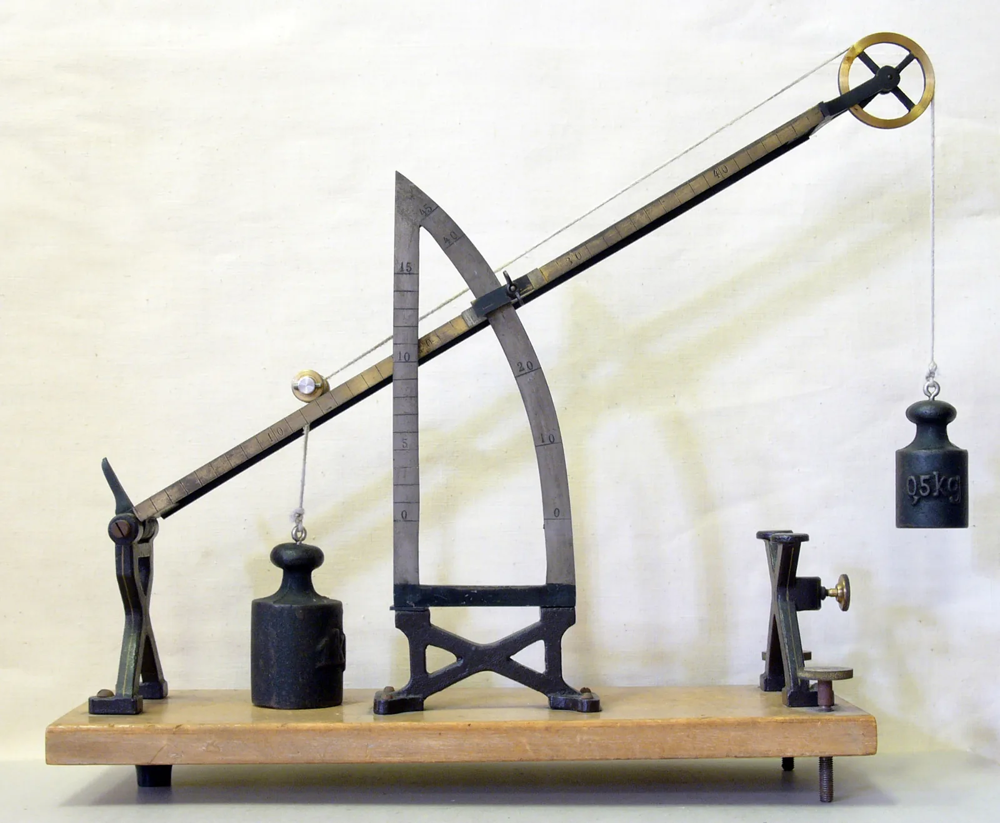

Liikeyhtälö kytketyille kappaleille
Miksi pöydän reunalta riippuva punnus putoaa hitaammin kuin vapaasti pudotessaan, kun se vetää langalla pöydällä olevaa kärryä mukanaan?
Pohjatiedot
- Newtonin toinen laki $\Sigma\overline{F} = m\overline{a}$luku Newtonin toinen laki
- Voimakuvion piirtäminen ja liikeyhtälön kirjoittaminen komponenteittainluku Voimakuvio ja voimien yhteisvaikutus
- Voima ja vastavoima vaikuttavat eri kappaleisiinluku Vuorovaikutus ja voima: Newtonin ensimmäinen ja kolmas laki
Luvun tärkeät käsitteet Vapaaehtoinen
Tutustu luvun tärkeisiin käsitteisiin. Voit kirjoittaa niiden merkitykset sinulle vahvimmalla kielellä tai useammalla kielellä.
- Liikeyhtälö
- Newtonin toinen laki kirjoitettuna yhdelle kappaleelle: kokonaisvoima on massa kertaa kiihtyvyys.
- Jännitysvoima
- Voima, jolla kireä lanka vetää kappaletta.
- Voimakuvio
- Kuva, jossa näkyvät vain yhteen kappaleeseen vaikuttavat voimat nuolina.
Pohdinta
Pöydällä on kärry. Kärryyn on sidottu lanka, joka kulkee pöydän reunalla olevan väkipyörän yli. Langan toisessa päässä roikkuu punnus. Kun kärry päästetään liikkeelle, punnus alkaa laskea ja vetää kärryä mukanaan. Punnus ei kuitenkaan putoa yhtä nopeasti kuin vapaasti pudotessaan.
Mikä kärryä vetää? Kuinka suuri langan voima on verrattuna punnuksen painoon?
Valinnainen Kertaa: voima ja vastavoima
Ennusta
Tee ennusteet ennen tutkimista 2 kysymystä
Ennuste 1: langan voima
Valinnainen Ennuste 2: kaksi riippuvaa kappaletta
Tutki
Simulaatio
Käyttöohje
Valitse Tilanne ja massat $m_1$ ja $m_2$. Käynnistä päästää kappaleet liikkeelle, ja ne kulkevat $0{,}60\,\text{m}$. Alusta palauttaa kappaleet alkuun. Nopeus hidastaa tai nopeuttaa liikettä, mutta lukemat eivät muutu. Voimakuviot ja lukemat näkyvät heti, myös ennen käynnistystä. Jos kahden riippuvan kappaleen massat ovat yhtä suuret, ne eivät lähde liikkeelle.
Mallin oletukset
Arvot ovat simulaation laskemia mallin arvoja. Lanka on kevyt ja venymätön. Väkipyörä on kevyt ja kitkaton. Pöydän kitka ja ilmanvastus jätetään huomiotta. Siksi kappaleiden kiihtyvyydet ovat yhtä suuret, ja lanka vetää kumpaakin kappaletta yhtä suurella voimalla $T$. Nopeuden sininen nuoli ja kiihtyvyyden oranssi nuoli ovat tilannekuvassa, koska ne eivät ole voimia. Voimakuvioiden nuolet ovat samassa mittakaavassa.
Laskennan selitys
Kärry ja punnus: kärryn yhtälö $T = m_1 a$ ja punnuksen yhtälö $m_2 g - T = m_2 a$ antavat $a = \dfrac{m_2}{m_1 + m_2}\,g$ ja $T = m_1 a$. Kaksi riippuvaa kappaletta, $m_2 > m_1$: yhtälöt $T - m_1 g = m_1 a$ ja $m_2 g - T = m_2 a$ antavat $a = \dfrac{m_2 - m_1}{m_1 + m_2}\,g$ ja $T = \dfrac{2 m_1 m_2}{m_1 + m_2}\,g$. Lukemissa $\Sigma F_1$ ja $\Sigma F_2$ ovat kappaleiden kokonaisvoimat liikkeen suuntaan. Lisäksi $g = 9{,}81\,\text{m/s}^2$.
Simulaatiossa pöydällä oleva kärry ja riippuva punnus on sidottu langalla, tai kaksi kappaletta roikkuu väkipyörän yli. Kummallekin kappaleelle on oma voimakuvio.
Koe 1: kärryn massa muuttuu
Testaa ennuste. Alkutila valitsee kärryn ja riippuvan punnuksen. Punnuksen massa on $0{,}50\,\text{kg}$ ja paino $4{,}9\,\text{N}$. Muuta vain kärryn massaa $m_1$. Kirjaa mittaus massoilla $0{,}50\,\text{kg}$, $1{,}0\,\text{kg}$ ja $1{,}5\,\text{kg}$. Katso joka kerta, miten nuolten $\overline{T}_1$ ja $\overline{G}_2$ pituudet muuttuvat.
- Alkutila
- tilanne: kärry ja punnus, punnuksen massa $m_2$: $0{,}50\,\text{kg}$, kärryn massa $m_1$: $0{,}50\,\text{kg}$
- Vakiona
- tilanne, punnuksen massa $m_2$
- Muutetaan
- kärryn massa $m_1$
| kärryn massa $m_1$ | $T$ $(\text{N})$ | $a$ (m/s$^2$) |
|---|
Kun kärryn massa on $1{,}0\,\text{kg}$, taulukossa on jännitysvoima $T$. Kuinka suuri on silloin punnukseen vaikuttava kokonaisvoima? Punnuksen paino on $4{,}9\,\text{N}$. Vastaa newtoneina.
Vihje 1: ohjaava kysymys
Piirrä punnuksen voimakuvio: paino alas ja jännitysvoima ylös. Kumpi nuoli on pidempi, kun punnus kiihtyy alas?
Vihje 2: mikä yhteys
Punnus kiihtyy alas, joten kokonaisvoima alas on $\Sigma F = G_2 - T$.
Vihje 3: välivaihe
$\Sigma F = 4{,}9\,\text{N} - T$. Tässä $T$ on taulukon rivin $m_1 = 1{,}0\,\text{kg}$ jännitysvoima.
Näytä ratkaisu
Annettu
taulukosta kärryn massalla $m_1 = 1{,}0\,\text{kg}$ jännitysvoima $T = 3{,}27\,\text{N}$. Punnuksen massa on $m_2 = 0{,}50\,\text{kg}$ ja paino $G_2 = 4{,}9\,\text{N}$.
Kysytty
punnukseen vaikuttava kokonaisvoima $\Sigma F$ yksikössä $\text{N}$
Periaate
Punnus on yksi kytketyistä kappaleista, joten sillä on oma voimakuvio ja oma liikeyhtälö. Punnus kiihtyy alas. Newtonin toisen lain mukaan sen kokonaisvoima osoittaa silloin alas.
Voimakuvio
Piirrä punnus suorakulmioksi, positiivinen suunta alas. Paino $\overline{G}_2$ osoittaa alas ja langan jännitysvoima $\overline{T}_2$ ylös. Nuoli $\overline{G}_2$ on pidempi, koska kokonaisvoima osoittaa alas.
Kaava
$\Sigma F = m_2 g - T = G_2 - T$
Muunnokset
Kaikki voimat ovat newtoneina. Muunnoksia ei tarvita.
Sijoitus
Vastaus
$1{,}6\,\text{N}$
Alas. Erotuksessa desimaalien määrä ratkaisee. Paino $4{,}9\,\text{N}$ on annettu yhdellä desimaalilla, joten tulos pyöristetään yhteen desimaaliin.
Järkevyys
Liikeyhtälöstä saadaan
Tulos on sama kuin erotuksesta. Voima on pienempi kuin paino $4{,}9\,\text{N}$, koska lanka kannattelee osan painosta.
Lisää tutkittavaa 3 tehtävää
Valinnainen Koe 2: kaksi riippuvaa kappaletta
Testaa toinen ennuste. Alkutila valitsee kaksi riippuvaa kappaletta. Toisen kappaleen massa $m_2$ on $0{,}50\,\text{kg}$. Muuta vain massaa $m_1$. Kirjaa mittaus massoilla $0{,}30\,\text{kg}$, $0{,}50\,\text{kg}$ ja $1{,}0\,\text{kg}$. Vertaa jännitysvoimaa kappaleiden painoihin.
- Alkutila
- tilanne: kaksi kappaletta, massa $m_2$: $0{,}50\,\text{kg}$, massa $m_1$: $0{,}30\,\text{kg}$
- Vakiona
- tilanne, massa $m_2$
- Muutetaan
- massa $m_1$
| massa $m_1$ | $G_1$ $(\text{N})$ | $T$ $(\text{N})$ | $a$ (m/s$^2$) |
|---|
Kun $m_1 = 0{,}30\,\text{kg}$, kevyempi kappale nousee. Kuinka suuri on siihen vaikuttava kokonaisvoima? Laske se taulukon arvoista. Vastaa newtoneina.
Vihje 1: ohjaava kysymys
Piirrä kevyemmän kappaleen voimakuvio. Kumpi voima on suurempi, kun kappale nousee?
Vihje 2: mikä yhteys
Kappale nousee, joten kokonaisvoima ylös on $\Sigma F = T - G_1$.
Vihje 3: välivaihe
$\Sigma F = T - G_1$. Tässä $T$ ja $G_1$ ovat taulukon rivin $m_1 = 0{,}30\,\text{kg}$ arvot.
Näytä ratkaisu
Annettu
taulukosta, kun $m_1 = 0{,}30\,\text{kg}$: paino $G_1 = 2{,}94\,\text{N}$ ja jännitysvoima $T = 3{,}68\,\text{N}$
Kysytty
kevyemmän kappaleen kokonaisvoima $\Sigma F$ yksikössä $\text{N}$
Periaate
Kevyempi kappale kiihtyy ylös. Newtonin toisen lain mukaan sen kokonaisvoima osoittaa silloin ylös. Kappaleella on oma voimakuvio ja oma liikeyhtälö.
Voimakuvio
Piirrä kappale suorakulmioksi, positiivinen suunta ylös. Jännitysvoima $\overline{T}_1$ osoittaa ylös ja paino $\overline{G}_1$ alas. Nuoli $\overline{T}_1$ on pidempi.
Kaava
$\Sigma F = T - G_1$
Muunnokset
Kaikki voimat ovat newtoneina. Muunnoksia ei tarvita.
Sijoitus
Vastaus
$0{,}74\,\text{N}$
Ylös. Taulukon lukemissa on kolme merkitsevää numeroa, mutta erotuksessa on vain kaksi. Lukemat on annettu sadasosan tarkkuudella.
Järkevyys
Liikeyhtälöstä saadaan
Tulos on sama. Nousevan kappaleen jännitysvoima on suurempi kuin sen paino, kuten pitääkin.
Johtopäätös
Selitä mittaustesi ja voimakuvioiden avulla, miksi langan jännitysvoima on pienempi kuin punnuksen paino. Selitä myös, miksi se lähestyy painoa, kun kärry on raskaampi.
Mallivastaus
Punnus kiihtyy alas, joten siihen vaikuttava kokonaisvoima $G_2 - T = m_2 a$ osoittaa alas. Siksi $T$ on pienempi kuin paino $G_2 = 4{,}9\,\text{N}$. Kärryyn vaikuttaa vaakasuunnassa vain lanka, joten $T = m_1 a$. Kun kärry on raskaampi, kiihtyvyys pienenee ja punnuksen kokonaisvoima $m_2 a$ pienenee. Silloin $T$ lähestyy painoa. Mallin arvoissa $T = 2{,}45\,\text{N}$ kärryn massalla $0{,}50\,\text{kg}$, $3{,}27\,\text{N}$ massalla $1{,}0\,\text{kg}$ ja $3{,}68\,\text{N}$ massalla $1{,}5\,\text{kg}$. Jännitysvoima olisi yhtä suuri kuin paino vasta, jos kappaleet eivät kiihtyisi. Näin on esimerkiksi silloin, kun kärryä pidetään paikallaan.
Arvioi oma vastauksesi
Merkitse kohdat, jotka sinun vastauksessasi jo on.
Kertaa asia teoriasta ja harjoittele tehtävillä.
Valinnainen Jännitysvoima mitatusta liikkeestä
Oppilas tutkii kärryn ja riippuvan punnuksen liikettä. Kärryn massa on $1{,}0\,\text{kg}$ ja punnuksen massa $0{,}50\,\text{kg}$. Kärry lähtee levosta ja kulkee $0{,}80\,\text{m}$. Kulkuaika mitataan viidellä toistolla: $0{,}69\,\text{s}$, $0{,}71\,\text{s}$, $0{,}70\,\text{s}$, $0{,}70\,\text{s}$ ja $0{,}70\,\text{s}$. Keskiarvo on $0{,}70\,\text{s}$. Kitka ja ilmanvastus ovat niin pieniä, että ne jätetään huomiotta. Piirrä kärryn voimakuvio vihkoon, ennen kuin vastaat.
Esimerkkiaineisto.
Kuinka suuri on langan jännitysvoima? Laske ensin kärryn kiihtyvyys kulkuajasta. Käytä sitten kärryn liikeyhtälöä. Vastaa newtoneina.
Vihje 1: ohjaava kysymys
Kärry lähtee levosta ja liikkuu tasaisesti kiihtyen. Mikä kaava yhdistää matkan, kiihtyvyyden ja ajan?
Vihje 2: mikä yhteys
$s = \tfrac{1}{2}at^2$, joten $a = \dfrac{2s}{t^2}$. Vaakasuunnassa kärryyn vaikuttaa vain lanka: $T = m_1 a$.
Vihje 3: välivaihe
$T = 1{,}0\,\text{kg} \cdot a$.
Näytä ratkaisu
Annettu
$m_1 = 1{,}0\,\text{kg}$, matka $s = 0{,}80\,\text{m}$, kulkuaika $t = 0{,}70\,\text{s}$ (viiden mittauksen keskiarvo) ja lähtö levosta
Kysytty
langan jännitysvoima $T$ yksikössä $\text{N}$
Periaate
Kärry kiihtyy tasaisesti levosta, joten matka ja aika antavat kiihtyvyyden. Kitka jätetään huomiotta, joten kärryyn vaikuttaa vaakasuunnassa vain lanka. Newtonin toisen lain mukaan sen voima on $m_1 a$.
Voimakuvio
Piirrä kärry suorakulmioksi, positiivinen suunta liikkeen suuntaan. Paino $\overline{G}_1$ osoittaa alas ja tukivoima $\overline{N}$ ylös, ja ne ovat yhtä pitkät. Jännitysvoima $\overline{T}_1$ osoittaa liikkeen suuntaan. Vaakasuunnassa vaikuttaa vain $\overline{T}_1$.
Kaava
$s = \tfrac{1}{2}at^2$, joten $a = \dfrac{2s}{t^2}$. Liikeyhtälö on $T = m_1 a$, joten $T = \dfrac{2 m_1 s}{t^2}$
Muunnokset
Aika ja matka ovat sekunteina ja metreinä. Muunnoksia ei tarvita.
Sijoitus
Vastaus
$3{,}3\,\text{N}$
Vastauksessa on kaksi merkitsevää numeroa, koska ajassa $0{,}70\,\text{s}$ ja matkassa $0{,}80\,\text{m}$ on kaksi.
Järkevyys
Jännitysvoima on pienempi kuin punnuksen paino $0{,}50\,\text{kg} \cdot 9{,}81\,\text{m/s}^2 \approx 4{,}9\,\text{N}$, kuten kiihtyvän punnuksen pitääkin. Tulos on sama kuin simulaation mallin arvo $3{,}27\,\text{N}$.
Teoria
Ydinajatus
Joskus kaksi kappaletta liikkuu yhdessä, koska lanka sitoo ne toisiinsa. Kun lanka on kireä eikä veny, kappaleet kulkevat saman matkan samassa ajassa. Silloin niiden kiihtyvyydet ovat yhtä suuret, ja merkitään niitä $a$. Lanka siirtää voiman kappaleelta toiselle: se vetää kumpaakin kappaletta itseään kohti. Tässä luvussa lanka on kevyt ja venymätön, ja väkipyörä on kevyt ja kitkaton. Väkipyörä on pyörä, jonka yli lanka kulkee. Pöydän kitka ja ilmanvastus jätetään huomiotta.
Kytketyt kappaleet käsitellään yksi kerrallaan. Kummallekin piirretään oma voimakuvio. Voimakuvio on kuva, jossa on vain yhteen kappaleeseen vaikuttavat voimat. Kummallekin kirjoitetaan myös oma liikeyhtälö. Kuvan kärryyn vaikuttavat paino $\overline{G}_1$, pöydän tukivoima $\overline{N}$ ja langan jännitysvoima $\overline{T}_1$. Jännitysvoima on voima, jolla kireä lanka vetää kappaletta. Riippuvaan punnukseen vaikuttavat paino $\overline{G}_2$ ja langan jännitysvoima $\overline{T}_2$.
Lanka vetää kärryä voimalla $\overline{T}_1$ ja punnusta voimalla $\overline{T}_2$. Voimat vaikuttavat eri kappaleisiin, joten ne ovat eri voimakuvioissa. Kevyt lanka ja kitkaton väkipyörä vain siirtävät voiman ja kääntävät sen suunnan. Siksi voimien suuruudet ovat samat: $T_1 = T_2 = T$. Voimat $\overline{T}_1$ ja $\overline{T}_2$ eivät kuitenkaan ole voima ja vastavoima. Kun lanka vetää kärryä, kärry vetää lankaa takaisin yhtä suurella voimalla. Tämä voima vaikuttaa lankaan, joten se ei ole kärryn voimakuviossa.

Kun punnus kiihtyy alaspäin, langan jännitysvoima on pienempi kuin punnuksen paino. Kiihtyvyys on alas, joten punnuksen kokonaisvoima osoittaa alas ja $G_2 > T$. Jos $T$ olisi yhtä suuri kuin $G_2$, punnukseen vaikuttava kokonaisvoima olisi nolla. Silloin punnus ei lähtisi liikkeelle. Punnus laskee siksi hitaammin kuin vapaasti putoava kappale. Kiihtyvyys $a = \tfrac{m_2 g}{m_1 + m_2}$ on pienempi kuin $g$, koska punnuksen paino kiihdyttää myös kärryä.
Kytkettyjen kappaleiden liikeyhtälöt
Jokaiselle kappaleelle kirjoitetaan oma liikeyhtälö $\Sigma F = ma$. Positiivinen suunta valitaan kullekin kappaleelle erikseen kiihtyvyyden suuntaan: kärryllä oikealle ja punnuksella alas. Lanka ei veny, joten kummankin kappaleen kiihtyvyys on yhtä suuri, $a$. Kärryn ja punnuksen yhtälöt ovat
$$\begin{aligned} T &= m_1 a \\ m_2 g - T &= m_2 a \end{aligned}$$
missä $m_1$ on kärryn massa (kg), $m_2$ punnuksen massa (kg), $T$ langan jännitysvoima (N), $a$ kiihtyvyys (m/s²) ja $g = 9{,}81\,\text{m/s}^2$. Tuntemattomia on kaksi, $a$ ja $T$, ja yhtälöitä on kaksi.
Lasketaan yhtälöt puolittain yhteen. Silloin $T$ poistuu, koska lanka on kappaleiden välinen sisäinen voima. Näin saadaan ensin kiihtyvyys ja sitten jännitysvoima:
$$\begin{aligned} a &= \frac{m_2}{m_1 + m_2}\,g \\ T &= m_1 a = \frac{m_1 m_2}{m_1 + m_2}\,g \end{aligned}$$
Jännitysvoima on aina pienempi kuin punnuksen paino $m_2 g$, koska $\tfrac{m_1}{m_1 + m_2} < 1$. Mitä raskaampi kärry on punnukseen verrattuna, sitä vähemmän kappaleet kiihtyvät. Silloin $T$ on lähempänä painoa $m_2 g$.
Kaksi riippuvaa kappaletta
Joskus langan kummassakin päässä roikkuu kappale. Silloin raskaampi ($m_2$) laskee ja kevyempi ($m_1$) nousee. Positiivinen suunta valitaan liikkeen suuntaan: kevyemmällä ylös ja raskaammalla alas. Silloin
$$\begin{aligned} T - m_1 g &= m_1 a \\ m_2 g - T &= m_2 a \end{aligned}$$
$$\begin{aligned} a &= \frac{m_2 - m_1}{m_1 + m_2}\,g \\ T &= \frac{2 m_1 m_2}{m_1 + m_2}\,g \end{aligned}$$
missä $m_2 > m_1$. Jännitysvoima on kappaleiden painojen $m_1 g$ ja $m_2 g$ välissä. Jos massat ovat yhtä suuret, $a = 0$ ja $T = mg$.
Menetelmä kytketyille kappaleille
- Piirrä oma voimakuvio kummallekin kappaleelle. Lanka vetää kumpaakin kappaletta itseään kohti. Jokaisella kappaleella on oma jännitysvoiman nuoli.
- Valitse positiivinen suunta kullekin kappaleelle kiihtyvyyden suuntaan. Joskus kiihtyvyyden oikeaa suuntaa ei tiedetä. Silloin positiivisen suunnan saa olettaa, kunhan kappaleiden suunnat sopivat yhteen langan kanssa. Jos kiihtyvyys on ratkaisussa negatiivinen, oikea kiihtyvyys on vastakkaiseen suuntaan. Kitkan suunta riippuu liikkeen suunnasta. Siksi oletettu suunta on tarkistettava, kun tilanteessa on kitkaa.
- Kirjoita liikeyhtälö $\Sigma F = ma$ kummallekin kappaleelle erikseen. Kiihtyvyys $a$ ja jännitysvoiman suuruus $T$ ovat samat molemmissa. Jos kappaletta vedetään lisäksi ulkoisella voimalla $\overline{F}$, se kuuluu vain vedettävän kappaleen voimakuvioon ja liikeyhtälöön.
- Ratkaise kaksi yhtälöä. Laske ne yhteen, jolloin $T$ poistuu. Tai sijoita toisesta yhtälöstä saatu $T$ toiseen yhtälöön.
- Tarkista etumerkit ja vertaa. Kun kappaleet kiihtyvät, jännitysvoima ei ole yhtä suuri kuin riippuvan kappaleen paino.
Yleinen virhekäsitys
Usein ajatellaan, että kärryä vetää riippuvan punnuksen paino. Silloin jännitysvoima olisi $m_2 g$. Kärryä vetää kuitenkin lanka, ja langan voima on $T$. Vain silloin, kun kappaleet eivät kiihdy, on $T = m_2 g$. Näin on esimerkiksi silloin, kun kärryä pidetään paikallaan. Kun punnus laskee kiihtyen, punnuksen kokonaisvoiman $G_2 - T = m_2 a$ on osoitettava alas. Siksi $T < m_2 g$.
Toinen virhe on pitää voimia $\overline{T}_1$ ja $\overline{T}_2$ voimana ja vastavoimana. Ne vaikuttavat eri kappaleisiin, ja ne kuuluvat eri vuorovaikutuksiin: toinen lanka–kärry-parin ja toinen lanka–punnus-parin voimia. Ne ovat yhtä suuret, koska lanka on kevyt ja väkipyörä on kevyt ja kitkaton. Ne eivät ole yhtä suuret siksi, että ne olisivat saman vuorovaikutusparin voimia. Kolmas virhe on ajatella, että raskaampi kappale kiihtyy enemmän. Venymättömän langan päissä olevilla kappaleilla on sama kiihtyvyys.
Tiivistelmä
- Langalla tai väkipyörän yli kytketyillä kappaleilla on kummallakin oma voimakuvio ja oma liikeyhtälö $\Sigma F = ma$. Positiivinen suunta valitaan kullekin kappaleelle kiihtyvyyden suuntaan. Jos suuntaa ei tiedetä, sen saa olettaa: negatiivinen ratkaisu kertoo, että kiihtyvyys on vastakkainen.
- Kevyt, venymätön lanka ja kevyt, kitkaton väkipyörä antavat kappaleille saman kiihtyvyyden $a$ ja yhtä suuret jännitysvoimat $T_1 = T_2 = T$.
- Kärrylle ja riippuvalle punnukselle $a = \frac{m_2}{m_1 + m_2}\,g$ ja $T = \frac{m_1 m_2}{m_1 + m_2}\,g$. Kahdelle riippuvalle kappaleelle $a = \frac{m_2 - m_1}{m_1 + m_2}\,g$ ja $T = \frac{2 m_1 m_2}{m_1 + m_2}\,g$.
- Kiihtyvän riippuvan kappaleen jännitysvoima ei ole sen paino. Kärryn ja punnuksen tapauksessa $T < m_2 g$. Kahdella riippuvalla kappaleella $T$ on painojen välissä.
- Jännitysvoimat $\overline{T}_1$ ja $\overline{T}_2$ vaikuttavat eri kappaleisiin. Ne eivät ole voima ja vastavoima.
Valinnainen Palaa ennusteisiisi
Vertaa ennusteitasi mittauksiin. Mitä opit langan jännitysvoimasta? Palaa myös alun kärryyn. Mikä kärryä vetää, ja kuinka suuri sen voima on verrattuna punnuksen painoon? Miksi punnus laskee hitaammin kuin vapaasti putoava kappale?
Haluaisitko muuttaa ennustettasi?
Esimerkit
Kun olet lukenut teorian, tee ohjatut esimerkit. Ensin katsot mallilaskun vaihe vaiheelta. Sitten teet valinnat itse. Vihjeet auttavat, jos jäät jumiin.
Esimerkki 1: Kärry ja punnus
Pöydällä on kärry, jonka massa on $1{,}5\,\text{kg}$. Kärryyn sidottu lanka kulkee pöydän reunalla olevan kevyen väkipyörän yli. Langan toisessa päässä roikkuu punnus, jonka massa on $0{,}60\,\text{kg}$. Kärry päästetään liikkeelle levosta. Kitka ja ilmanvastus jätetään huomiotta. Lanka on kevyt ja venymätön. Kuinka suuri on kärryn kiihtyvyys ja kuinka suuri on langan jännitysvoima?
Vaihe 1/8
Tunnetut ja kysytty. $m_1 = 1{,}5\,\text{kg}$, $m_2 = 0{,}60\,\text{kg}$ ja $g = 9{,}81\,\text{m/s}^2$. Kysytään kiihtyvyyttä $a$ ja langan jännitysvoimaa $T$.
Vaihe 2/8
Periaate. Kärry ja punnus ovat kaksi kappaletta, joten kummallekin kirjoitetaan oma liikeyhtälö. Lanka ei veny, joten kappaleiden kiihtyvyydet ovat yhtä suuret, $a$. Lanka on kevyt ja väkipyörä on kevyt ja kitkaton, joten lanka vetää kumpaakin kappaletta samalla voimalla $T$. Kitkaa ei ole. Siksi vaakasuunnassa kärryyn vaikuttaa vain lanka.
Vaihe 3/8
Voimakuvio. Kummallekin kappaleelle on oma voimakuvio. Kärryn positiivinen suunta on oikealle ja punnuksen alas. Pystysuunnassa kärry ei kiihdy, joten $N = G_1$. Vaakasuunnassa kärryä vetää vain $\overline{T}_1$. Punnukseen vaikuttavat $\overline{G}_2$ alas ja $\overline{T}_2$ ylös.
Vaihe 4/8
Kaava ratkaistuna. Kuvioista luetaan kaksi liikeyhtälöä, ja ne ratkaistaan:
$$\begin{aligned} T &= m_1 a \\ m_2 g - T &= m_2 a \\ m_2 g &= (m_1 + m_2) a \\ a &= \frac{m_2 g}{m_1 + m_2} \\ T &= m_1 a \end{aligned}$$
Vaihe 5/8
Yksikkömuunnokset. Niitä ei tarvita. Massat ovat kilogrammoina, ja $\tfrac{\text{kg} \cdot \text{m/s}^2}{\text{kg}} = \text{m/s}^2$.
Vaihe 6/8
Sijoitus. Sijoitetaan lukuarvot yksiköineen:
$$\begin{aligned} a &= \frac{m_2 g}{m_1 + m_2} \\ \phantom{a} &= \frac{0{,}60\,\text{kg} \cdot 9{,}81\,\text{m/s}^2}{1{,}5\,\text{kg} + 0{,}60\,\text{kg}} \\ \phantom{a} &\approx 2{,}80\,\text{m/s}^2 \\[4pt] T &= m_1 a = 1{,}5\,\text{kg} \cdot 2{,}803\,\text{m/s}^2 \\ \phantom{T} &\approx 4{,}20\,\text{N} \end{aligned}$$
Vaihe 7/8
Tulos. Kärryn kiihtyvyys on $a \approx 2{,}8\,\text{m/s}^2$ ja langan jännitysvoima on $T \approx 4{,}2\,\text{N}$. Tuloksessa on kaksi merkitsevää numeroa, koska massoissa $1{,}5\,\text{kg}$ ja $0{,}60\,\text{kg}$ on kaksi merkitsevää numeroa.
Vaihe 8/8
Järkevyys. Punnuksen paino on $m_2 g \approx 5{,}9\,\text{N}$. Jännitysvoima $4{,}2\,\text{N}$ on sitä pienempi, kuten pitääkin. Punnuksen kokonaisvoima on $5{,}886\,\text{N} - 4{,}204\,\text{N} \approx 1{,}68\,\text{N}$. Se on yhtä suuri kuin
Kiihtyvyys on pienempi kuin $g$, koska punnus kiihdyttää myös kärryä. Jos kärryä ei olisi, punnus putoaisi kiihtyvyydellä $g$.
Esimerkki 2: Etsi virhe
Esimerkki 3: Sovella uuteen tilanteeseen
Pöydällä oleva kärry, jonka massa on $1{,}2\,\text{kg}$, on sidottu langalla väkipyörän yli riippuvaan punnukseen. Kärryn kiihtyvyydeksi mitataan $2{,}0\,\text{m/s}^2$. Kitka ja ilmanvastus jätetään huomiotta. Lanka ja väkipyörä ovat kevyet.
Kuinka suuri on punnuksen massa? Vastaa kilogrammoina.
Vihje 1: ohjaava kysymys
Piirrä kummankin kappaleen voimakuvio. Mikä voima kiihdyttää kärryä?
Vihje 2: mikä yhteys
Kärry: $T = m_1 a$. Punnus: $m_2 g - T = m_2 a$.
Vihje 3: välivaihe
Sijoita $T = m_1 a$ punnuksen yhtälöön ja ratkaise $m_2$: $m_2 (g - a) = m_1 a$.
Näytä ratkaisu
Annettu
$m_1 = 1{,}2\,\text{kg}$, kärryn kiihtyvyys $a = 2{,}0\,\text{m/s}^2$ ja $g = 9{,}81\,\text{m/s}^2$
Kysytty
riippuvan punnuksen massa $m_2$ yksikössä $\text{kg}$
Periaate
Kärry ja punnus ovat kaksi kappaletta, ja kummallekin kirjoitetaan oma liikeyhtälö. Lanka ei veny, joten punnuksen kiihtyvyys on yhtä suuri, $a$. Lanka on kevyt, joten se vetää kumpaakin kappaletta voimalla $T$. Kitka jätetään huomiotta.
Voimakuvio
Piirrä kärry suorakulmioksi, positiivinen suunta oikealle. Vaakasuunnassa vaikuttaa vain jännitysvoima $\overline{T}_1$. Piirrä punnus suorakulmioksi, positiivinen suunta alas. Paino $\overline{G}_2$ osoittaa alas ja jännitysvoima $\overline{T}_2$ ylös, ja $T_1 = T_2 = T$.
Kaava
Kärry $T = m_1 a$ ja punnus $m_2 g - T = m_2 a$. Sijoitetaan $T$: $m_2 g - m_1 a = m_2 a$, joten $m_2 = \dfrac{m_1 a}{g - a}$
Muunnokset
Kaikki suureet ovat SI-yksiköissä. Muunnoksia ei tarvita.
Sijoitus
Vastaus
$0{,}31\,\text{kg}$
Vastauksessa on kaksi merkitsevää numeroa, koska massassa $1{,}2\,\text{kg}$ ja kiihtyvyydessä $2{,}0\,\text{m/s}^2$ on kaksi.
Järkevyys
Kaavalla
kuten mitattiin. Punnus on kevyempi kuin kärry, joten kiihtyvyys jää alle $g/2$. Jännitysvoima $T = 2{,}4\,\text{N}$ on pienempi kuin punnuksen paino $3{,}0\,\text{N}$.
Kertaa luvun käsitteet
Jos valitset Kertaa myöhemmin, kortti menee kertauspakkaasi.
- Kytketty kappale
- Langalla toiseen sidottu kappale; venymättömän langan päissä kappaleiden kiihtyvyyksillä on sama suuruus.
- Väkipyörä
- Pyörä, jonka yli lanka kulkee; kevyt ja kitkaton väkipyörä kääntää langan voiman suunnan muuttamatta sen suuruutta.
- Sisäinen voima
- Tarkasteltavien kappaleiden välinen voima; kun kappaleiden liikeyhtälöt lasketaan yhteen, se supistuu pois.
- Ulkoinen voima
- Tarkasteltavien kappaleiden ulkopuolelta vaikuttava voima; se kuuluu vain sen kappaleen voimakuvioon, johon se vaikuttaa.
Tehtävät
Taso 1 · perusharjoitus 8 tehtävää
Yksi kaava tai yksi päättelyaskel. Tee ensin ydintehtävät. Loput ovat lisäharjoitusta.
- Tehtävä 7-1
Kärry, jonka massa on $1{,}5\,\text{kg}$, on kitkattomalla pöydällä. Siihen sidottu lanka vetää sitä vaakasuoraan $3{,}0\,\text{N}$:n voimalla. Piirrä kärryn voimakuvio. Kuinka suuri on kärryn kiihtyvyys?
Vastaus
$2{,}0\,\text{m/s}^2$
Näytä ratkaisu
Annettu
$m = 1{,}5\,\text{kg}$ ja langan jännitysvoima $T = 3{,}0\,\text{N}$ vaakasuoraan. Kitka jätetään huomiotta.
Kysytty
kärryn kiihtyvyys $a$ yksikössä $\text{m/s}^2$
Periaate
Kärry kiihtyy vaakasuunnassa. Newtonin toisen lain mukaan vaakasuuntaisten voimien summa on massa kertaa kiihtyvyys. Pystysuunnassa kärry ei kiihdy, joten siellä voimat kumoavat toisensa.
Voimakuvio
Piirrä kärry suorakulmioksi. Valitse $x$-suunta langan suuntaan. Paino $\overline{G}$ osoittaa alas ja pöydän tukivoima $\overline{N}$ ylös, ja nuolet ovat yhtä pitkät. Jännitysvoima $\overline{T}$ osoittaa vaakasuoraan eteenpäin. Vaakasuunnassa vaikuttaa vain $\overline{T}$.
Kaava
$T = ma$, joten $a = \dfrac{T}{m}$
Muunnokset
Kaikki suureet ovat SI-yksiköissä. Muunnoksia ei tarvita.
Sijoitus
$a$$= \dfrac{3{,}0\,\text{N}}{1{,}5\,\text{kg}}$$= 2{,}0\,\text{m/s}^2$Vastaus
$2{,}0\,\text{m/s}^2$
Vastauksessa on kaksi merkitsevää numeroa, koska tiedoissa $3{,}0\,\text{N}$ ja $1{,}5\,\text{kg}$ on kaksi.
Järkevyys
Yksi newton antaa yhden kilogramman kappaleelle kiihtyvyyden $1\,\text{m/s}^2$. Voima $3{,}0\,\text{N}$ ja massa $1{,}5\,\text{kg}$ antavat kaksi kertaa sen. Tulo $1{,}5\,\text{kg} \cdot 2{,}0\,\text{m/s}^2 = 3{,}0\,\text{N}$ antaa voiman takaisin.
- Tehtävä 7-2
Punnus, jonka massa on $0{,}60\,\text{kg}$, roikkuu langan varassa ja laskee kiihtyvyydellä $2{,}0\,\text{m/s}^2$. Ilmanvastus jätetään huomiotta. Piirrä punnuksen voimakuvio. Kuinka suuri on langan jännitysvoima?
Vastaus
$4{,}7\,\text{N}$
Näytä ratkaisu
Annettu
$m = 0{,}60\,\text{kg}$, kiihtyvyys alas $a = 2{,}0\,\text{m/s}^2$ ja $g = 9{,}81\,\text{m/s}^2$. Ilmanvastus jätetään huomiotta.
Kysytty
langan jännitysvoima $T$ yksikössä $\text{N}$
Periaate
Punnus kiihtyy alas. Newtonin toisen lain mukaan sen kokonaisvoima osoittaa alas ja on $ma$. Punnukseen vaikuttavat Maa ja lanka.
Voimakuvio
Piirrä punnus suorakulmioksi. Positiivinen suunta on alas. Paino $\overline{G}$ lähtee keskipisteestä alas ja jännitysvoima $\overline{T}$ yläpinnasta ylös. Nuoli $\overline{G}$ on pidempi, koska kokonaisvoima osoittaa alas.
Kaava
$mg - T = ma$, joten $T = m(g - a)$
Muunnokset
Kaikki suureet ovat SI-yksiköissä. Muunnoksia ei tarvita.
Sijoitus
$T$$= 0{,}60\,\text{kg} \cdot (9{,}81\,\text{m/s}^2 - 2{,}0\,\text{m/s}^2)$$= 0{,}60\,\text{kg} \cdot 7{,}81\,\text{m/s}^2$$= 4{,}686\,\text{N}$Vastaus
$4{,}7\,\text{N}$
Vastauksessa on kaksi merkitsevää numeroa, koska massassa $0{,}60\,\text{kg}$ ja kiihtyvyydessä $2{,}0\,\text{m/s}^2$ on kaksi.
Järkevyys
Punnuksen paino on $0{,}60\,\text{kg} \cdot 9{,}81\,\text{m/s}^2 \approx 5{,}9\,\text{N}$. Tulos $4{,}7\,\text{N}$ on sitä pienempi, koska punnus kiihtyy alas. Erotus $1{,}2\,\text{N}$ on $ma = 0{,}60\,\text{kg} \cdot 2{,}0\,\text{m/s}^2$.
- Tehtävä 7-3Ydintehtävä
Kärry, jonka massa on $1{,}0\,\text{kg}$, on kitkattomalla pöydällä. Siihen sidottu kevyt ja venymätön lanka kulkee pöydän reunalla olevan kevyen ja kitkattoman väkipyörän yli. Langan päässä roikkuu punnus, jonka massa on $0{,}40\,\text{kg}$. Ilmanvastus jätetään huomiotta.
Piirrä kummankin kappaleen voimakuvio. Kuinka suuri on langan jännitysvoima, kun kappaleet liikkuvat?
Vastaus
$2{,}8\,\text{N}$
Näytä ratkaisu
Annettu
kärry $m_1 = 1{,}0\,\text{kg}$, punnus $m_2 = 0{,}40\,\text{kg}$ ja $g = 9{,}81\,\text{m/s}^2$. Kitka ja ilmanvastus jätetään huomiotta. Lanka on kevyt ja venymätön, ja väkipyörä on kevyt ja kitkaton.
Kysytty
langan jännitysvoima $T$ yksikössä $\text{N}$
Periaate
Kappaleita on kaksi, joten kummallekin kirjoitetaan oma liikeyhtälö. Lanka ei veny, joten kiihtyvyys $a$ on molemmilla yhtä suuri. Kevyt lanka ja kitkaton väkipyörä siirtävät voiman muuttumattomana. Siksi lanka vetää kumpaakin voimalla $T$.
Voimakuvio
Piirrä kärry suorakulmioksi, positiivinen suunta oikealle. Voimat $\overline{G}_1$ ja $\overline{N}$ kumoavat toisensa, ja vaakasuunnassa vaikuttaa $\overline{T}_1$. Piirrä punnus suorakulmioksi, positiivinen suunta alas. Voima $\overline{G}_2$ osoittaa alas ja $\overline{T}_2$ ylös.
Kaava
$T = m_1 a$ ja $m_2 g - T = m_2 a$. Yhteenlaskusta $m_2 g = (m_1 + m_2)\,a$, joten $a = \dfrac{m_2 g}{m_1 + m_2}$, ja $T = m_1 a$
Muunnokset
Kaikki suureet ovat SI-yksiköissä. Muunnoksia ei tarvita.
Sijoitus
$a$$= \dfrac{0{,}40\,\text{kg} \cdot 9{,}81\,\text{m/s}^2}{1{,}4\,\text{kg}}$$= 2{,}803\,\text{m/s}^2$$T$$= 1{,}0\,\text{kg} \cdot 2{,}803\,\text{m/s}^2$$= 2{,}803\,\text{N}$Vastaus
$2{,}8\,\text{N}$
Vastauksessa on kaksi merkitsevää numeroa, koska massoissa $1{,}0\,\text{kg}$ ja $0{,}40\,\text{kg}$ on kaksi.
Järkevyys
Jännitysvoima on pienempi kuin punnuksen paino $m_2 g = 3{,}9\,\text{N}$, koska punnus kiihtyy alas. Kiihtyvyys
$a$$= T : m_1$$\approx 2{,}8\,\text{m/s}^2$on pienempi kuin $g$. Erotus $3{,}9\,\text{N} - 2{,}8\,\text{N} = 1{,}1\,\text{N}$ on $m_2 a = 0{,}40\,\text{kg} \cdot 2{,}8\,\text{m/s}^2$.
- Tehtävä 7-4
Kaksi samanlaista kappaletta roikkuu kevyen langan päissä kevyen ja kitkattoman väkipyörän yli. Kummankin massa on $3{,}0\,\text{kg}$. Kappaleet ovat levossa. Piirrä toisen kappaleen voimakuvio.
Kuinka suuri on langan jännitysvoima?
Vastaus
$29\,\text{N}$
Näytä ratkaisu
Annettu
kaksi kappaletta, kummankin massa $m = 3{,}0\,\text{kg}$, levossa, ja $g = 9{,}81\,\text{m/s}^2$. Lanka on kevyt, ja väkipyörä on kevyt ja kitkaton.
Kysytty
langan jännitysvoima $T$ yksikössä $\text{N}$
Periaate
Kappale on levossa. Newtonin toisen lain mukaan siihen vaikuttavien voimien summa on silloin nolla. Toisen kappaleen voimakuvio riittää, koska kevyt lanka vetää kumpaakin kappaletta yhtä suurella voimalla.
Voimakuvio
Piirrä kappale suorakulmioksi, positiivinen suunta ylös. Paino $\overline{G}$ lähtee keskipisteestä alas ja jännitysvoima $\overline{T}$ yläpinnasta ylös. Nuolet ovat yhtä pitkät.
Kaava
$T - mg = 0$, joten $T = mg$
Muunnokset
Kaikki suureet ovat SI-yksiköissä. Muunnoksia ei tarvita.
Sijoitus
$T$$= 3{,}0\,\text{kg} \cdot 9{,}81\,\text{m/s}^2$$= 29{,}43\,\text{N}$Vastaus
$29\,\text{N}$
Vastauksessa on kaksi merkitsevää numeroa, koska massassa $3{,}0\,\text{kg}$ on kaksi.
Järkevyys
Jännitysvoima on yhden kappaleen paino. Se ei ole kahden kappaleen painojen summa $59\,\text{N}$, sillä lanka kannattelee kumpaakin päästään yhdellä voimalla. Jos toinen kappale korvattaisiin seinään kiinnitetyllä koukulla, lanka kestäisi saman voiman.
- Tehtävä 7-5
Kaksi kärryä, joiden massat ovat $1{,}0\,\text{kg}$ ja $2{,}0\,\text{kg}$, on sidottu toisiinsa kevyellä langalla. Ne ovat kitkattomalla radalla, ja ilmanvastus jätetään huomiotta. Kevyempää kärryä vetää vaakasuora $12\,\text{N}$:n voima, ja kärryt liikkuvat yhdessä.
Kuinka suuri on kärryjen yhteinen kiihtyvyys?
Vastaus
$4{,}0\,\text{m/s}^2$
Näytä ratkaisu
Annettu
kärryt $m_1 = 1{,}0\,\text{kg}$ ja $m_2 = 2{,}0\,\text{kg}$, vetovoima $F = 12\,\text{N}$ kevyempään kärryyn. Kitka jätetään huomiotta.
Kysytty
kärryjen yhteinen kiihtyvyys $a$ yksikössä $\text{m/s}^2$
Periaate
Kärryt liikkuvat yhdessä, ja niiden kiihtyvyydet ovat yhtä suuret. Kummallekin kärrylle kirjoitetaan oma liikeyhtälö. Kun yhtälöt lasketaan yhteen, langan sisäinen voima $T$ poistuu.
Voimakuvio
Piirrä kevyempi kärry suorakulmioksi, positiivinen suunta vetoon päin. Vaakasuunnassa vetovoima $\overline{F}$ osoittaa eteenpäin ja jännitysvoima $\overline{T}_1$ taaksepäin. Piirrä raskaampi kärry suorakulmioksi. Vaakasuunnassa vaikuttaa vain $\overline{T}_2$ eteenpäin. Paino ja tukivoima kumoavat toisensa kummassakin kärryssä.
Kaava
$F - T = m_1 a$ ja $T = m_2 a$. Yhteenlaskusta $F = (m_1 + m_2)\,a$, joten $a = \dfrac{F}{m_1 + m_2}$
Muunnokset
Kaikki suureet ovat SI-yksiköissä. Muunnoksia ei tarvita.
Sijoitus
$a$$= \dfrac{12\,\text{N}}{1{,}0\,\text{kg} + 2{,}0\,\text{kg}}$$= 4{,}0\,\text{m/s}^2$Vastaus
$4{,}0\,\text{m/s}^2$
Vastauksessa on kaksi merkitsevää numeroa, koska tiedoissakin on kaksi.
Järkevyys
Jännitysvoima on
$T$$= m_2 a$$= 2{,}0\,\text{kg} \cdot 4{,}0\,\text{m/s}^2$$= 8{,}0\,\text{N}$Kevyempään kärryyn jää $F - T = 4{,}0\,\text{N} = m_1 a$. Kiihtyvyys on sama kuin silloin, kun $3{,}0\,\text{kg}$:n kappaletta vedettäisiin voimalla $12\,\text{N}$.
- Tehtävä 7-6Ydintehtävä
Kärry on kitkattomalla pöydällä. Kärry on sidottu langalla punnukseen väkipyörän yli. Punnus laskee ja kärry kiihtyy. Lanka ja väkipyörä ovat kevyet. Ilmanvastusta ei oteta huomioon.
Miten langan jännitysvoima $T$ ja punnuksen paino $G_2$ vertautuvat toisiinsa?
Vastaus
$T$ on pienempi kuin $G_2$, koska punnuksen kokonaisvoima osoittaa alaspäin
Näytä ratkaisu
Kysytty
miten langan jännitysvoima $T$ ja punnuksen paino $G_2$ vertautuvat toisiinsa, kun punnus laskee ja kiihtyy.
Periaate
Newtonin toisen lain mukaan kokonaisvoima osoittaa kiihtyvyyden suuntaan. Punnus kiihtyy alas, joten sen kokonaisvoima osoittaa alas. Punnukseen vaikuttavat vain paino alas ja langan jännitysvoima ylös.
Mallivastaus
Punnukselle pätee $G_2 - T = m_2 a$. Punnus kiihtyy alas, joten $a > 0$ ja $G_2 - T > 0$. Jännitysvoima on siis pienempi kuin punnuksen paino. Lanka ei kannattele koko painoa, koska punnus kiihtyy alas eikä ole levossa. Lanka ei voi vetää myöskään painoa kovemmin. Silloin kokonaisvoima osoittaisi ylös, eikä punnus laskisi. Lanka vetää kärryä ja punnusta samalla voimalla $T$. Se ei jaa voimaansa puoliksi. Voimien erotus on aina $m_2 a$.
- Tehtävä 7-7
Kevyen ja venymättömän langan päissä roikkuu kaksi kappaletta väkipyörän yli. Kappaleiden massat ovat $0{,}30\,\text{kg}$ ja $0{,}70\,\text{kg}$. Väkipyörä on kevyt ja kitkaton. Ilmanvastusta ei oteta huomioon. Kappaleet päästetään liikkeelle. Piirrä kummankin kappaleen voimakuvio.
Kuinka suuri on kappaleiden yhteinen kiihtyvyys?
Vastaus
$3{,}9\,\text{m/s}^2$
Näytä ratkaisu
Annettu
$m_1 = 0{,}30\,\text{kg}$ ja $m_2 = 0{,}70\,\text{kg}$ langan päissä ja $g = 9{,}81\,\text{m/s}^2$. Lanka on kevyt ja venymätön. Väkipyörä on kevyt ja kitkaton. Ilmanvastus jätetään huomiotta.
Kysytty
kappaleiden yhteinen kiihtyvyys $a$ yksikössä $\text{m/s}^2$
Periaate
Kirjoita kummallekin kappaleelle oma liikeyhtälö. Lanka ei veny, joten kappaleiden kiihtyvyyksillä on sama suuruus $a$. Kevyt lanka vetää kumpaakin kappaletta voimalla $T$. Raskaampi kappale laskee ja kevyempi nousee.
Voimakuvio
Piirrä kevyempi kappale suorakulmioksi. Positiivinen suunta on ylös. Voima $\overline{T}_1$ osoittaa ylös ja $\overline{G}_1$ alas. Piirrä raskaampi kappale suorakulmioksi. Positiivinen suunta on alas. Voima $\overline{G}_2$ osoittaa alas ja $\overline{T}_2$ ylös. Nuoli $\overline{T}$ on lyhyempi kuin $\overline{G}_2$ ja pidempi kuin $\overline{G}_1$.
Kaava
$T - m_1 g = m_1 a$ ja $m_2 g - T = m_2 a$. Kun lasket yhtälöt yhteen, $T$ poistuu: $(m_2 - m_1)\,g = (m_1 + m_2)\,a$. Siis $a = \dfrac{(m_2 - m_1)\,g}{m_1 + m_2}$
Muunnokset
Kaikki suureet ovat SI-yksiköissä. Muunnoksia ei tarvita.
Sijoitus
$a$$= \dfrac{(0{,}70\,\text{kg} - 0{,}30\,\text{kg}) \cdot 9{,}81\,\text{m/s}^2}{0{,}30\,\text{kg} + 0{,}70\,\text{kg}}$$= \dfrac{0{,}40 \cdot 9{,}81}{1{,}00}\,\text{m/s}^2$$= 3{,}924\,\text{m/s}^2$Vastaus
$3{,}9\,\text{m/s}^2$
Vastauksessa on kaksi merkitsevää numeroa, koska massoissa $0{,}30\,\text{kg}$ ja $0{,}70\,\text{kg}$ on kaksi.
Järkevyys
Kiihtyvyys on pienempi kuin $g = 9{,}81\,\text{m/s}^2$, koska kevyempi kappale hidastaa raskaampaa. Jännitysvoima on
$T$$= m_1 (g + a)$$= 0{,}30\,\text{kg} \cdot 13{,}73\,\text{m/s}^2$$= 4{,}12\,\text{N}$Raskaammalle kappaleelle saadaan
$m_2 g - T$$= 6{,}87\,\text{N} - 4{,}12\,\text{N}$$= 2{,}75\,\text{N}$$= m_2 a$ - Tehtävä 7-8
Kärry on kitkattomalla pöydällä. Kärry on sidottu langalla väkipyörän yli punnukseen, joka laskee. Piirrät kärryn voimakuvion. Mitkä voimat vaikuttavat kärryyn pöydän suunnassa? Mikä väite on oikein?
Vastaus
Vain langan jännitysvoima, koska punnuksen paino vaikuttaa punnukseen eikä kärryyn
Näytä ratkaisu
Kysytty
mitkä voimat vaikuttavat kärryyn pöydän suunnassa, kun punnus laskee langan varassa.
Periaate
Voimakuvioon piirretään vain voimat, jotka vaikuttavat juuri siihen kappaleeseen. Jokainen voima syntyy vuorovaikutuksesta. Pöydän suunnassa kärryyn koskee vain lanka. Kärryn paino ja pöydän tukivoima ovat pystysuorat.
Mallivastaus
Punnuksen paino on Maan voima punnukseen. Se kuuluu punnuksen voimakuvioon. Lanka välittää punnuksen vaikutuksen kärryyn jännitysvoimana $T$. Se on kärryn ainoa voima pöydän suunnassa. Kärryn liikeyhtälö pöydän suunnassa on siis $T = m_1 a$. Kärry liikkuu eteenpäin, mutta liike ei ole voima. Liike-energiaa ei piirretä voimakuvioon. Punnus kiihtyy alas, joten jännitysvoima on pienempi kuin punnuksen paino: $T < m_2 g$.
Taso 2 · soveltava harjoitus 9 tehtävää
Kaksi vaihetta, mittausaineiston käsittely, yksikkömuunnos tai kaavan ratkaiseminen. Tee ensin ydintehtävät. Loput ovat lisäharjoitusta.
- Tehtävä 7-9
Nosturin köysi nostaa laatikkoa, jonka massa on $50\,\text{kg}$. Sen alapuolella roikkuu toisen köyden päässä toinen laatikko, jonka massa on $30\,\text{kg}$. Laatikot kiihtyvät ylöspäin kiihtyvyydellä $1{,}2\,\text{m/s}^2$.
Köydet ovat kevyet ja venymättömät, ja ilmanvastus jätetään huomiotta.
Piirrä kummankin laatikon voimakuvio vihkoon, ennen kuin avaat ratkaisun. Kuinka suuri on nosturin köyden jännitysvoima?
Vastaus
$880\,\text{N}$
Näytä ratkaisu
Annettu
ylempi laatikko $m_1 = 50\,\text{kg}$, alempi laatikko $m_2 = 30\,\text{kg}$, kiihtyvyys ylös $a = 1{,}2\,\text{m/s}^2$ ja $g = 9{,}81\,\text{m/s}^2$. Köydet ovat kevyet ja venymättömät. Ilmanvastus jätetään huomiotta.
Kysytty
nosturin köyden jännitysvoima $T_1$ yksikössä $\text{N}$
Periaate
Laatikot ovat kaksi kappaletta, ja kummallekin kirjoitetaan oma liikeyhtälö. Alempi laatikko roikkuu ylemmästä, joten niillä on sama kiihtyvyys $a$. Kevyen köyden voima on sama köyden kummassakin päässä. Siksi alempi köysi vetää ylempää laatikkoa alas samalla voimalla $T_2$, jolla se vetää alempaa laatikkoa ylös.
Voimakuvio
Piirrä ylempi laatikko suorakulmioksi, positiivinen suunta ylös. Nosturin köyden voima $\overline{T}_1$ lähtee yläpinnasta ylös, paino $\overline{G}_1$ keskipisteestä alas ja alemman köyden voima $\overline{T}_2$ alapinnasta alas. Piirrä alempi laatikko suorakulmioksi. Voima $\overline{T}_2$ lähtee yläpinnasta ylös ja paino $\overline{G}_2$ alas. Nuoli $\overline{T}_1$ on pisin.
Kaava
$T_1 - T_2 - m_1 g = m_1 a$ ja $T_2 - m_2 g = m_2 a$, joten yhteenlaskusta $T_1 = (m_1 + m_2)(g + a)$
Muunnokset
Kaikki suureet ovat SI-yksiköissä. Muunnoksia ei tarvita.
Sijoitus
$T_1$$= (50\,\text{kg} + 30\,\text{kg}) \cdot (9{,}81\,\text{m/s}^2 + 1{,}2\,\text{m/s}^2)$$= 80\,\text{kg} \cdot 11{,}01\,\text{m/s}^2$$= 880{,}8\,\text{N}$Vastaus
$880\,\text{N}$
Eli $8{,}8 \cdot 10^{2}\,\text{N}$. Vastauksessa on kaksi merkitsevää numeroa, koska kiihtyvyydessä $1{,}2\,\text{m/s}^2$ ja massassa $30\,\text{kg}$ on kaksi.
Järkevyys
Laatikoiden yhteinen paino on $80\,\text{kg} \cdot 9{,}81\,\text{m/s}^2 \approx 785\,\text{N}$. Kiihtyvä nosto vaatii enemmän. Ylimäärä $96\,\text{N}$ on $(m_1 + m_2)\,a = 80\,\text{kg} \cdot 1{,}2\,\text{m/s}^2$. Alemman köyden voima on
$T_2$$= m_2 (g + a)$$\approx 330\,\text{N}$Se on pienempi kuin $T_1$, koska se kantaa vain alemman laatikon.
- Tehtävä 7-10Ydintehtävä
Kevyen ja venymättömän langan päissä roikkuu väkipyörän yli kaksi kappaletta. Niiden massat ovat $0{,}50\,\text{kg}$ ja $1{,}0\,\text{kg}$. Väkipyörä on kevyt ja kitkaton, ja ilmanvastus jätetään huomiotta. Kappaleet päästetään liikkeelle. Piirrä kummankin kappaleen voimakuvio.
Kuinka suuri on langan jännitysvoima?
Vastaus
$6{,}5\,\text{N}$
Näytä ratkaisu
Annettu
$m_1 = 0{,}50\,\text{kg}$ ja $m_2 = 1{,}0\,\text{kg}$ langan päissä ja $g = 9{,}81\,\text{m/s}^2$. Lanka on kevyt, ja väkipyörä on kevyt ja kitkaton. Ilmanvastus jätetään huomiotta.
Kysytty
langan jännitysvoima $T$ yksikössä $\text{N}$
Periaate
Kummallekin kappaleelle kirjoitetaan oma liikeyhtälö. Raskaampi $m_2$ laskee ja kevyempi $m_1$ nousee. Lanka ei veny, joten kiihtyvyys $a$ on molemmilla yhtä suuri. Lanka vetää kumpaakin voimalla $T$.
Voimakuvio
Piirrä kevyempi kappale suorakulmioksi, positiivinen suunta ylös. Voima $\overline{T}_1$ osoittaa ylös ja $\overline{G}_1$ alas. Piirrä raskaampi kappale suorakulmioksi, positiivinen suunta alas. Voima $\overline{G}_2$ osoittaa alas ja $\overline{T}_2$ ylös.
Kaava
$T - m_1 g = m_1 a$ ja $m_2 g - T = m_2 a$, joten yhteenlaskusta
$a$$= \dfrac{(m_2 - m_1)\,g}{m_1 + m_2}$$T$$= m_1 (g + a)$$= \dfrac{2 m_1 m_2}{m_1 + m_2}\cdot g$Muunnokset
Kaikki suureet ovat SI-yksiköissä. Muunnoksia ei tarvita.
Sijoitus
$T$$= \dfrac{2 \cdot 0{,}50\,\text{kg} \cdot 1{,}0\,\text{kg}}{0{,}50\,\text{kg} + 1{,}0\,\text{kg}} \cdot 9{,}81\,\text{m/s}^2$$= 0{,}6667\,\text{kg} \cdot 9{,}81\,\text{m/s}^2$$= 6{,}54\,\text{N}$Vastaus
$6{,}5\,\text{N}$
Vastauksessa on kaksi merkitsevää numeroa, koska massoissa $0{,}50\,\text{kg}$ ja $1{,}0\,\text{kg}$ on kaksi.
Järkevyys
Painot ovat $m_1 g \approx 4{,}9\,\text{N}$ ja $m_2 g \approx 9{,}8\,\text{N}$. Tulos $6{,}5\,\text{N}$ on niiden välissä: nousevalle kappaleelle $T > G_1$ ja laskevalle $T < G_2$. Kiihtyvyys $a = 3{,}27\,\text{m/s}^2$ antaa samat voimat: $T - G_1 = 1{,}635\,\text{N} = m_1 a$.
- Tehtävä 7-11
Jäällä on kaksi kelkkaa, joiden massat ovat $3{,}0\,\text{kg}$ ja $2{,}0\,\text{kg}$. Kelkat on sidottu toisiinsa kevyellä narulla. Raskaampaa kelkkaa vedetään toisella narulla vaakasuoraan $20\,\text{N}$:n voimalla, ja kelkat liikkuvat yhdessä. Kitka ja ilmanvastus jätetään huomiotta. Piirrä kummankin kelkan voimakuvio.
Kuinka suuri on kelkkojen välisen narun jännitysvoima?
Vastaus
$8{,}0\,\text{N}$
Näytä ratkaisu
Annettu
kelkat $m_1 = 3{,}0\,\text{kg}$ (vedettävä) ja $m_2 = 2{,}0\,\text{kg}$ sekä vetovoima $F = 20\,\text{N}$. Kitka ja ilmanvastus jätetään huomiotta. Narut ovat kevyet ja venymättömät.
Kysytty
kelkkojen välisen narun jännitysvoima $T$ yksikössä $\text{N}$
Periaate
Kelkat liikkuvat yhdessä, ja niiden kiihtyvyys $a$ on yhtä suuri. Kummallekin kelkalle kirjoitetaan oma liikeyhtälö. Takimmaista kelkkaa vetää vain kelkkojen välinen naru.
Voimakuvio
Piirrä raskaampi kelkka suorakulmioksi, positiivinen suunta vetoon päin. Vetovoima $\overline{F}$ osoittaa eteenpäin ja jännitysvoima $\overline{T}_1$ taaksepäin. Piirrä kevyempi kelkka suorakulmioksi. Vaakasuunnassa vaikuttaa vain $\overline{T}_2$ eteenpäin. Paino ja tukivoima kumoavat toisensa kummassakin kelkassa.
Kaava
$F - T = m_1 a$ ja $T = m_2 a$. Yhteenlaskusta $a = \dfrac{F}{m_1 + m_2}$, joten $T = m_2 a = \dfrac{m_2}{m_1 + m_2}\,F$
Muunnokset
Kaikki suureet ovat SI-yksiköissä. Muunnoksia ei tarvita.
Sijoitus
$T$$= \dfrac{2{,}0\,\text{kg}}{3{,}0\,\text{kg} + 2{,}0\,\text{kg}} \cdot 20\,\text{N}$$= 0{,}40 \cdot 20\,\text{N}$$= 8{,}0\,\text{N}$Vastaus
$8{,}0\,\text{N}$
Vastauksessa on kaksi merkitsevää numeroa, koska tiedoissakin on kaksi.
Järkevyys
Narun voima on pienempi kuin vetovoima $20\,\text{N}$, koska naru kiihdyttää vain takimmaista kelkkaa. Kiihtyvyys on
$a$$= 20\,\text{N} : 5{,}0\,\text{kg}$$= 4{,}0\,\text{m/s}^2$Etummaiselle kelkalle jää
$20\,\text{N} - 8{,}0\,\text{N}$$= 12\,\text{N}$$= m_1 a$ - Tehtävä 7-12
Väkipyörän yli kulkevan kevyen ja venymättömän langan päissä roikkuu kaksi kappaletta. Kevyemmän massa on $0{,}60\,\text{kg}$. Kappaleet päästetään liikkeelle, ja raskaampi laskee kiihtyvyydellä $2{,}0\,\text{m/s}^2$. Väkipyörä on kevyt ja kitkaton, ja ilmanvastus jätetään huomiotta. Piirrä kummankin kappaleen voimakuvio.
Kuinka suuri on raskaamman kappaleen massa?
Vastaus
$0{,}91\,\text{kg}$
Näytä ratkaisu
Annettu
kevyemmän kappaleen massa $m_1 = 0{,}60\,\text{kg}$, raskaamman kiihtyvyys alas $a = 2{,}0\,\text{m/s}^2$ ja $g = 9{,}81\,\text{m/s}^2$. Lanka on kevyt, ja väkipyörä on kevyt ja kitkaton. Ilmanvastus jätetään huomiotta.
Kysytty
raskaamman kappaleen massa $m_2$ yksikössä $\text{kg}$
Periaate
Kappaleita on kaksi, ja kummallekin kirjoitetaan oma liikeyhtälö. Lanka ei veny, joten kiihtyvyys $a$ on molemmilla yhtä suuri. Kevyt lanka vetää kumpaakin voimalla $T$. Kevyempi kappale nousee ja raskaampi laskee.
Voimakuvio
Piirrä kevyempi kappale suorakulmioksi, positiivinen suunta ylös. Voima $\overline{T}_1$ osoittaa ylös ja $\overline{G}_1$ alas, ja $\overline{T}_1$ on pidempi. Piirrä raskaampi kappale suorakulmioksi, positiivinen suunta alas. Voima $\overline{G}_2$ osoittaa alas ja $\overline{T}_2$ ylös, ja $\overline{G}_2$ on pidempi.
Kaava
$T - m_1 g = m_1 a$ ja $m_2 g - T = m_2 a$. Ensimmäisestä saadaan $T = m_1 (g + a)$. Toinen antaa $m_2 (g - a) = T$, joten $m_2 = \dfrac{m_1 (g + a)}{g - a}$
Muunnokset
Kaikki suureet ovat SI-yksiköissä. Muunnoksia ei tarvita.
Sijoitus
$m_2$$= \dfrac{0{,}60\,\text{kg} \cdot (9{,}81 + 2{,}0)\,\text{m/s}^2}{(9{,}81 - 2{,}0)\,\text{m/s}^2}$$= \dfrac{7{,}086\,\text{N}}{7{,}81\,\text{m/s}^2}$$= 0{,}9073\,\text{kg}$Vastaus
$0{,}91\,\text{kg}$
Vastauksessa on kaksi merkitsevää numeroa, koska massassa $0{,}60\,\text{kg}$ ja kiihtyvyydessä $2{,}0\,\text{m/s}^2$ on kaksi.
Järkevyys
Massa $0{,}91\,\text{kg}$ on suurempi kuin $0{,}60\,\text{kg}$, kuten raskaamman kappaleen pitääkin. Tarkistus kaavalla
$a$$= \dfrac{(m_2 - m_1)\,g}{m_1 + m_2}$$= \dfrac{0{,}3073 \cdot 9{,}81}{1{,}5073}\,\text{m/s}^2$$\approx 2{,}0\,\text{m/s}^2$Jännitysvoima $T = 7{,}09\,\text{N}$ on painojen $5{,}9\,\text{N}$ ja $8{,}9\,\text{N}$ välissä.
- Tehtävä 7-13Ydintehtävä
Atwoodin koneessa kaksi punnusta roikkuu kevyen ja venymättömän langan päissä väkipyörän yli. Punnusten yhteinen massa on aina $M = 0{,}500\,\text{kg}$. Väkipyörä on kevyt ja kitkaton. Massaero on $\Delta m = m_2 - m_1$. Massaeroa muutetaan siirtämällä pieniä massoja punnukselta toiselle. Jokaisella massaerolla mitataan raskaamman punnuksen kiihtyvyys $a$. Taulukossa on esimerkkiaineisto mittauksista.
a) Johda kummankin punnuksen liikeyhtälöstä kaava, jolla lasket $a$:n massaerosta $\Delta m$.
b) Piirrä $(\Delta m, a)$-kuvaaja ja sovita siihen suora, joka kulkee origon kautta. Määritä putoamiskiihtyvyys $g$ suoran kulmakertoimesta.
Vastauslaatikkoon tulee kohdan b) putoamiskiihtyvyys.
Atwoodin koneen kiihtyvyys eri massaeroilla (esimerkkiaineisto) $\Delta m\,(\text{g})$ $a\,(\text{m/s}^2)$ 50 0,96 100 2,02 150 2,88 200 3,97 250 4,84 Vastaus
$9{,}8\,\text{m/s}^2$
Näytä ratkaisu
Annettu
punnusten yhteinen massa $M = 0{,}500\,\text{kg}$. Taulukosta: $\Delta m = 50$; $100$; $150$; $200$ ja $250\,\text{g}$ sekä $a = 0{,}96$; $2{,}02$; $2{,}88$; $3{,}97$ ja $4{,}84\,\text{m/s}^2$ (esimerkkiaineisto).
Kysytty
a) kaava, jolla lasket $a$:n massaerosta $\Delta m$; b) putoamiskiihtyvyys $g$ yksikössä $\text{m/s}^2$
Periaate
Kirjoita kummallekin punnukselle oma liikeyhtälö. Lanka ei veny ja on kevyt. Siksi kiihtyvyyden suuruus $a$ ja jännitysvoima $T$ ovat molemmilla samat. Kun lasket yhtälöt yhteen, $T$ poistuu. Jäljelle jää suora verrannollisuus $a \propto \Delta m$. Suoran kulmakertoimesta saat $g$:n.
Kuvaajan lukeminen
Pisteet $(\Delta m, a)$ ovat lähes suoralla, joka kulkee origon kautta. Yksittäiset pisteet poikkeavat suorasta enintään noin $0{,}1\,\text{m/s}^2$. Se on mittauksen satunnaista vaihtelua. Origon kautta kulkeva sovitussuora osuu viimeisen pisteen kohdalla arvoon $a = 4{,}9\,\text{m/s}^2$, kun $\Delta m = 0{,}250\,\text{kg}$. Kulmakerroin on siis
$k$$= \dfrac{4{,}9\,\text{m/s}^2}{0{,}250\,\text{kg}}$$= 19{,}6\,\dfrac{\text{m/s}^2}{\text{kg}}$Kaava
Kevyempi $m_1$ nousee ja raskaampi $m_2$ laskee: $T - m_1 g = m_1 a$ ja $m_2 g - T = m_2 a$. Yhteenlaskusta saadaan $(m_2 - m_1)\,g = (m_1 + m_2)\,a$, joten $a = \dfrac{g}{M}\,\Delta m$. Kulmakerroin on $k = \dfrac{g}{M}$, joten $g = k\,M$
Muunnokset
$\Delta m$$= 250\,\text{g}$$= 0{,}250\,\text{kg}$Muut suureet ovat SI-yksiköissä.
Sijoitus
$g$$= 19{,}6\,\dfrac{\text{m/s}^2}{\text{kg}} \cdot 0{,}500\,\text{kg}$$= 9{,}8\,\text{m/s}^2$Vastaus
$9{,}8\,\text{m/s}^2$
Vastauksessa on kaksi merkitsevää numeroa, koska käsin sovitetun suoran kulmakertoimen saa vain kahden numeron tarkkuudella.
Järkevyys
Tulos on lähellä tunnettua arvoa $9{,}81\,\text{m/s}^2$. Pisteiden suhteet $a : \Delta m$ ovat $19{,}2$; $20{,}2$; $19{,}2$; $19{,}9$ ja $19{,}4$ yksikössä $\dfrac{\text{m/s}^2}{\text{kg}}$. Kaikki ovat lähellä arvoa $19{,}6$. Kaavan mukaan $\Delta m = 250\,\text{g}$ antaa
$a$$= \dfrac{0{,}250 \cdot 9{,}81}{0{,}500}\,\text{m/s}^2$$= 4{,}9\,\text{m/s}^2$Se on pienempi kuin $g$, kuten pitääkin.
- Tehtävä 7-14
Kärry on kitkattomalla radalla. Sen massa on $1{,}20\,\text{kg}$. Kärry on sidottu kevyellä ja venymättömällä langalla punnukseen, joka roikkuu kevyen ja kitkattoman väkipyörän yli. Kärry päästetään liikkeelle levosta eri punnuksilla. Jokaisella kerralla mitataan kärryn kiihtyvyys $a$. Taulukossa on esimerkkiaineisto mittauksista.
Valitse mittaus, jossa punnuksen massa on $0{,}50\,\text{kg}$. Määritä langan jännitysvoima kärryn liikeyhtälön avulla. Tarkista tulos punnuksen liikeyhtälöllä samasta mittauksesta. Piirrä ensin kummankin kappaleen voimakuvio.
Vastauslaatikkoon tulee kärryn liikeyhtälöstä saatu jännitysvoima.
Kärryn kiihtyvyys eri punnuksilla (esimerkkiaineisto) $m_2\,(\text{kg})$ $a\,(\text{m/s}^2)$ 0,10 0,74 0,20 1,40 0,30 1,97 0,50 2,84 0,70 3,60 Vastaus
$3{,}4\,\text{N}$
Näytä ratkaisu
Annettu
kärryn massa $m_1 = 1{,}20\,\text{kg}$. Mittauksessa, jossa punnuksen massa on $m_2 = 0{,}50\,\text{kg}$, kiihtyvyys on $a = 2{,}84\,\text{m/s}^2$ (esimerkkiaineisto). $g = 9{,}81\,\text{m/s}^2$. Kitka jätetään huomiotta. Lanka ja väkipyörä ovat kevyet.
Kysytty
langan jännitysvoima $T$ yksikössä $\text{N}$
Periaate
Pöydän suunnassa kärryyn vaikuttaa vain lanka. Kärryn liikeyhtälöstä saat siis $T$:n suoraan mitatusta kiihtyvyydestä. Tarkista tulos laskemalla $T$ myös punnuksen liikeyhtälöstä. Siinä $T$ on painon vastasuuntainen.
Kuvaajan lukeminen
Taulukon rivi $m_2 = 0{,}50\,\text{kg}$ antaa $a = 2{,}84\,\text{m/s}^2$. Kiihtyvyys kasvaa, kun punnuksen massa kasvaa. Kasvu ei ole suoraan verrannollinen. Massa tulee viisinkertaiseksi ($0{,}10\,\text{kg} \to 0{,}50\,\text{kg}$), mutta kiihtyvyys tulee vain nelinkertaiseksi ($0{,}74 \to 2{,}84\,\text{m/s}^2$).
Voimakuvio
Piirrä kärry suorakulmioksi. Positiivinen suunta on langan suuntaan. Voimat $\overline{G}_1$ ja $\overline{N}$ kumoavat toisensa. Vaakasuunnassa vaikuttaa vain $\overline{T}_1$. Piirrä punnus suorakulmioksi. Positiivinen suunta on alas. Voima $\overline{G}_2$ osoittaa alas ja $\overline{T}_2$ ylös.
Kaava
Kärry: $T = m_1 a$. Punnus: $m_2 g - T = m_2 a$, joten tarkistus on $T = m_2\,(g - a)$
Muunnokset
Kaikki suureet ovat SI-yksiköissä. Muunnoksia ei tarvita.
Sijoitus
$T$$= 1{,}20\,\text{kg} \cdot 2{,}84\,\text{m/s}^2$$= 3{,}408\,\text{N}$Tarkistus:
$T$$= 0{,}50\,\text{kg} \cdot (9{,}81\,\text{m/s}^2 - 2{,}84\,\text{m/s}^2)$$= 0{,}50\,\text{kg} \cdot 6{,}97\,\text{m/s}^2$$= 3{,}485\,\text{N}$Vastaus
$3{,}4\,\text{N}$
Vastauksessa on kaksi merkitsevää numeroa. Yhtälöt antavat $3{,}41\,\text{N}$ ja $3{,}49\,\text{N}$, jotka eroavat noin $2\,\%$. Siksi vain kaksi ensimmäistä numeroa on luotettavia.
Järkevyys
Kaksi tapaa antaa $3{,}4\,\text{N}$ ja $3{,}5\,\text{N}$. Ne eroavat noin $2\,\%$, mikä sopii mittauksen tarkkuuteen. Teorian mukaan
$a$$= \dfrac{0{,}50 \cdot 9{,}81}{1{,}70}\,\text{m/s}^2$$= 2{,}89\,\text{m/s}^2$Mitattu $2{,}84\,\text{m/s}^2$ on hieman pienempi. Jännitysvoima on pienempi kuin punnuksen paino $4{,}9\,\text{N}$, kuten pitääkin.
- Tehtävä 7-15
Kitkattomalla pöydällä on kärry, jonka massa on $2{,}0\,\text{kg}$. Kärryyn on sidottu kevyt ja venymätön lanka. Lanka kulkee kevyen ja kitkattoman väkipyörän yli. Langan päässä roikkuu punnus, jonka massa on $0{,}50\,\text{kg}$. Kappaleet päästetään liikkeelle. Ilmanvastusta ei oteta huomioon.
Oppilaan ratkaisu: ”Kärryyn vaikuttaa vaakasuunnassa vain lanka, joten $T = m_1 a$. Punnukselle $m_2 g - T = m_2 a$. Sijoitin ensimmäisen jälkimmäiseen: $m_2 g - m_1 a = m_2 a$. Siitä ratkaisin $a = \dfrac{m_2 g}{m_1} = 2{,}5\,\text{m/s}^2$.”
Etsi virhe oppilaan ratkaisusta ja laske oikea kiihtyvyys. Piirrä myös kummankin kappaleen voimakuvio.
Vastauslaatikkoon tulee oikea kiihtyvyys.
Vastaus
$2{,}0\,\text{m/s}^2$
Näytä ratkaisu
Annettu
kärry $m_1 = 2{,}0\,\text{kg}$, punnus $m_2 = 0{,}50\,\text{kg}$ ja $g = 9{,}81\,\text{m/s}^2$. Kitka ja ilmanvastus jätetään huomiotta. Lanka ja väkipyörä ovat kevyet. Oppilaan tulos on $2{,}5\,\text{m/s}^2$.
Kysytty
oppilaan ratkaisun virhe ja oikea kiihtyvyys $a$ yksikössä $\text{m/s}^2$
Periaate
Kirjoita kummallekin kappaleelle oma liikeyhtälö. Kiihtyvyys koskee koko systeemiä: sekä kärryä että punnusta. Oppilaan yhtälöt $T = m_1 a$ ja $m_2 g - T = m_2 a$ ovat oikein, mutta ratkaisussa on virhe.
Voimakuvio
Piirrä kärry suorakulmioksi. Positiivinen suunta on oikealle. Voimat $\overline{G}_1$ ja $\overline{N}$ kumoavat toisensa. Vaakasuunnassa vaikuttaa vain $\overline{T}_1$. Piirrä punnus suorakulmioksi. Positiivinen suunta on alas. Voima $\overline{G}_2$ osoittaa alas ja $\overline{T}_2$ ylös.
Kaava
Virhe: sijoituksen jälkeen yhtälö on $m_2 g - m_1 a = m_2 a$. Myös punnuksen massa kuuluu nimittäjään:
$m_2 g$$= m_1 a + m_2 a$$= (m_1 + m_2)\,a$Oppilas unohti punnuksen massan. Pitää käyttää koko liikkuvan systeemin massaa $m_1 + m_2$. Oikein on $a = \dfrac{m_2 g}{m_1 + m_2}$
Muunnokset
Kaikki suureet ovat SI-yksiköissä. Muunnoksia ei tarvita.
Sijoitus
$a$$= \dfrac{0{,}50\,\text{kg} \cdot 9{,}81\,\text{m/s}^2}{2{,}0\,\text{kg} + 0{,}50\,\text{kg}}$$= \dfrac{4{,}905\,\text{N}}{2{,}5\,\text{kg}}$$= 1{,}962\,\text{m/s}^2$Vastaus
$2{,}0\,\text{m/s}^2$
Vastauksessa on kaksi merkitsevää numeroa, koska tiedoissa $2{,}0\,\text{kg}$ ja $0{,}50\,\text{kg}$ on kaksi. Oppilaan tulos oli liian suuri, koska hän jakoi vain kärryn massalla.
Järkevyys
Jännitysvoima
$T$$= m_1 a$$= 2{,}0\,\text{kg} \cdot 1{,}962\,\text{m/s}^2$$= 3{,}92\,\text{N}$on pienempi kuin punnuksen paino $4{,}9\,\text{N}$. Erotus $0{,}98\,\text{N}$ on $m_2 a = 0{,}50\,\text{kg} \cdot 1{,}962\,\text{m/s}^2$. Oppilaan arvolla $a = 2{,}45\,\text{m/s}^2$ saisi $T = m_1 a = 4{,}9\,\text{N}$ ja $m_2 g - T \approx 0$. Punnuksen liikeyhtälö vaatisi kuitenkin $m_2 a = 1{,}2\,\text{N}$. Arvo on siis väärä.
- Tehtävä 7-16
Kitkattomalla pöydällä on kärry, jonka massa on $1{,}6\,\text{kg}$. Kärryyn on sidottu kevyt ja venymätön lanka. Lanka kulkee pöydän reunalla olevan kevyen ja kitkattoman väkipyörän yli. Langan päässä roikkuu punnus, jonka massa on $0{,}40\,\text{kg}$. Kappaleet päästetään liikkeelle levosta. Ilmanvastus jätetään huomiotta.
Sitten koe tehdään toisin päin: pöydällä on $0{,}40\,\text{kg}$:n kärry ja langan päässä roikkuu $1{,}6\,\text{kg}$:n punnus. Miten langan jännitysvoima $T$ muuttuu, kun toista koetta verrataan ensimmäiseen?
Vastaus
Jännitysvoima pysyy ennallaan.
Näytä ratkaisu
Kysytty
miten langan jännitysvoima $T$ muuttuu, kun kärryn ja punnuksen massat vaihdetaan keskenään, ja mikä perustelu selittää sen.
Periaate
Kummallekin kappaleelle kirjoitetaan oma liikeyhtälö: kärrylle $T = m_1 a$ ja punnukselle $m_2 g - T = m_2 a$. Kevyt ja venymätön lanka sekä kevyt ja kitkaton väkipyörä antavat kappaleille saman kiihtyvyyden suuruuden $a$ ja saman jännitysvoiman $T$. Yhtälöistä saadaan $a = \tfrac{m_2}{m_1 + m_2}\,g$ ja $T = \tfrac{m_1 m_2}{m_1 + m_2}\,g$.
Mallivastaus
Ensimmäisessä kokeessa $m_1 = 1{,}6\,\text{kg}$ ja $m_2 = 0{,}40\,\text{kg}$:
$$\begin{aligned} a &= \frac{0{,}40\,\text{kg} \cdot 9{,}81\,\text{m/s}^2}{2{,}0\,\text{kg}} \\ \phantom{a} &= 1{,}962\,\text{m/s}^2 \\ T &= 1{,}6\,\text{kg} \cdot 1{,}962\,\text{m/s}^2 \\ \phantom{T} &\approx 3{,}14\,\text{N} \end{aligned}$$
Toisessa kokeessa $m_1 = 0{,}40\,\text{kg}$ ja $m_2 = 1{,}6\,\text{kg}$:
$$\begin{aligned} a &= \frac{1{,}6\,\text{kg} \cdot 9{,}81\,\text{m/s}^2}{2{,}0\,\text{kg}} \\ \phantom{a} &= 7{,}848\,\text{m/s}^2 \\ T &= 0{,}40\,\text{kg} \cdot 7{,}848\,\text{m/s}^2 \\ \phantom{T} &\approx 3{,}14\,\text{N} \end{aligned}$$
Jännitysvoima pysyy siis samana, noin $3{,}1\,\text{N}$. Perustelu: kaavassa $T = \tfrac{m_1 m_2}{m_1 + m_2}\,g$ massojen tulo ja summa eivät muutu, kun massat vaihtavat paikkaa. Kiihtyvyys nelinkertaistuu, koska systeemiä kiihdyttävä punnuksen paino nelinkertaistuu. Siksi $T = m_1 a$ ei pienene, vaikka kärryn massa pienenee neljäsosaan. Kummassakin kokeessa $T$ on pienempi kuin punnuksen paino ($3{,}9\,\text{N}$ ja $15{,}7\,\text{N}$), kuten kiihtyvällä punnuksella pitääkin.
- Tehtävä 7-17
Kärry on kitkattomalla radalla. Sen massa on $0{,}80\,\text{kg}$. Kärryyn on sidottu kevyt ja venymätön lanka. Lanka kulkee kevyen ja kitkattoman väkipyörän yli, ja langan päässä roikkuu punnus. Kärry päästetään liikkeelle levosta, ja sen nopeus mitataan. Kuvaajassa ovat mittauspisteet. Ilmanvastus jätetään huomiotta.
Määritä kärryn kiihtyvyys kuvaajasta. Laske sen avulla langan jännitysvoima. Piirrä ensin kärryn voimakuvio.
Vastaus
$T \approx 1{,}6\,\text{N}$
Näytä ratkaisu
Annettu
kärryn massa $m_1 = 0{,}80\,\text{kg}$ ja kuvaajan mittauspisteet kärrylle, joka lähtee levosta. Kitka ja ilmanvastus jätetään huomiotta. Lanka ja väkipyörä ovat kevyet.
Kysytty
langan jännitysvoima $T$ yksikössä $\text{N}$
Periaate
Vaakasuunnassa kärryyn vaikuttaa vain lanka. Kärryn liikeyhtälö $T = m_1 a$ antaa siksi jännitysvoiman, kun kiihtyvyys tunnetaan. Kiihtyvyys on $(t,v)$-kuvaajan kulmakerroin. Punnuksen massaa ei tarvita.
Voimakuvio
Piirrä kärry suorakulmioksi. Positiivinen suunta on langan suuntaan. Pystysuunnassa paino $\overline{G}_1$ ja tukivoima $\overline{N}$ kumoavat toisensa. Vaakasuunnassa vaikuttaa vain $\overline{T}_1$.
Kuvaajan lukeminen
Pisteet ovat suoralla, joka kulkee origon kautta. Nopeus kasvaa joka puolen sekunnin välillä noin $1{,}0\,\text{m/s}$. Kiihtyvyys on siis vakio. Lue kaukaisin piste $(2{,}0\,\text{s}$; $3{,}9\,\text{m/s})$ ja alkupiste $(0\,\text{s}$; $0\,\text{m/s})$. Kaukainen piste antaa tarkimman kulmakertoimen.
Kaava
$a = \dfrac{\Delta v}{\Delta t}$ ja $T = m_1 a$
Muunnokset
Nopeudet ovat yksikössä $\text{m/s}$, ajat sekunteina ja massa kilogrammoina. Muunnoksia ei tarvita.
Sijoitus
$a$$= \dfrac{3{,}9\,\text{m/s} - 0\,\text{m/s}}{2{,}0\,\text{s} - 0\,\text{s}}$$= 1{,}95\,\text{m/s}^2$$T$$= 0{,}80\,\text{kg} \cdot 1{,}95\,\text{m/s}^2$$= 1{,}56\,\text{N}$Vastaus
$T \approx 1{,}6\,\text{N}$
Vastauksessa on kaksi merkitsevää numeroa, koska massa $0{,}80\,\text{kg}$ ja luetut nopeudet ovat kahden numeron tarkkuudella.
Järkevyys
Kiihtyvyys $1{,}95\,\text{m/s}^2$ on pienempi kuin $g$. Niin pitääkin olla, koska punnus kiihdyttää myös kärryä. Arvio: noin $0{,}8\,\text{kg}$ ja noin $2\,\text{m/s}^2$ antavat noin $1{,}6\,\text{N}$.
Taso 3 · haastava 6 tehtävää
Valinnaisia tehtäviä. Sovellat, yhdistät kaksi ideaa tai päättelet uudessa tilanteessa.
- Tehtävä 7-18
Hissin kori, jonka massa on $800\,\text{kg}$, roikkuu kevyen ja venymättömän köyden päässä. Köysi kulkee kevyen ja kitkattoman pyörän yli. Köyden toisessa päässä on vastapaino, jonka massa on $1200\,\text{kg}$.
Vastapaino laskee ja kori nousee. Kitka ja ilmanvastus jätetään huomiotta.
Piirrä korin ja vastapainon voimakuviot. Kuinka suuri voima köydestä kohdistuu pyörän akseliin? Pyörä on kevyt, ja akseli pitää sen paikallaan.
Vastaus
$19000\,\text{N}$
Näytä ratkaisu
Annettu
korin massa $m_1 = 800\,\text{kg}$, vastapainon massa $m_2 = 1200\,\text{kg}$ ja $g = 9{,}81\,\text{m/s}^2$. Köysi on kevyt ja venymätön, pyörä on kevyt ja kitkaton, ja ilmanvastus jätetään huomiotta.
Kysytty
voima $F_\text{akseli}$, jolla köysi vaikuttaa pyörän akseliin, yksikössä $\text{N}$
Periaate
Kori ja vastapaino ovat kaksi kappaletta, ja kummallekin kirjoitetaan oma liikeyhtälö. Köysi ei veny, joten $a$ on molemmilla yhtä suuri. Kevyt köysi vetää kumpaakin voimalla $T$. Pyörä on kevyt eikä kiihdy, joten sen kokonaisvoima on nolla.
Voimakuvio
Piirrä kori suorakulmioksi, positiivinen suunta ylös. Voima $\overline{T}_1$ osoittaa ylös ja $\overline{G}_1$ alas. Piirrä vastapaino suorakulmioksi, positiivinen suunta alas. Voima $\overline{G}_2$ osoittaa alas ja $\overline{T}_2$ ylös. Nuolet $\overline{T}_1$ ja $\overline{T}_2$ ovat yhtä pitkät. Pyörässä on kaksi voimaa $T$ alas ja voima $F_\text{akseli}$ ylös.
Kaava
$T - m_1 g = m_1 a$ ja $m_2 g - T = m_2 a$, joten
$T$$= \dfrac{2 m_1 m_2}{m_1 + m_2}\cdot g$Pyörän tasapainosta $F_\text{akseli} - 2T = 0$, joten $F_\text{akseli} = 2T$
Muunnokset
Kaikki suureet ovat SI-yksiköissä. Muunnoksia ei tarvita.
Sijoitus
$T$$= \dfrac{2 \cdot 800\,\text{kg} \cdot 1200\,\text{kg}}{800\,\text{kg} + 1200\,\text{kg}} \cdot 9{,}81\,\text{m/s}^2$$= 960\,\text{kg} \cdot 9{,}81\,\text{m/s}^2$$= 9418\,\text{N}$$F_\text{akseli}$$= 2 \cdot 9418\,\text{N}$$= 18\,835\,\text{N}$Vastaus
$19000\,\text{N}$
Eli $19\,\text{kN}$. Vastauksessa on kaksi merkitsevää numeroa, koska massat on annettu sadan kilogramman tarkkuudella.
Järkevyys
Painot ovat $m_1 g \approx 7850\,\text{N}$ ja $m_2 g \approx 11\,770\,\text{N}$. Jännitysvoima $T = 9418\,\text{N}$ on niiden välissä. Akselin voima $18\,835\,\text{N}$ on pienempi kuin painojen summa $19\,620\,\text{N}$, koska vastapaino kiihtyy alas.
- Tehtävä 7-19
Kärry, jonka massa on $1{,}0\,\text{kg}$, on kitkattomalla pöydällä. Se on sidottu kevyellä ja venymättömällä langalla kevyen ja kitkattoman väkipyörän yli riippuvaan punnukseen.
Lanka katkeaa, jos sen jännitysvoima ylittää $3{,}0\,\text{N}$.
Kuinka suuri on suurin punnuksen massa, jolla lanka vielä kestää, kun kappaleet liikkuvat? Piirrä ensin kummankin kappaleen voimakuvio. Vastaa kilogrammoina.
Vastaus
$0{,}44\,\text{kg}$
Näytä ratkaisu
Annettu
kärry $m_1 = 1{,}0\,\text{kg}$, suurin sallittu jännitysvoima $T_{\max} = 3{,}0\,\text{N}$ ja $g = 9{,}81\,\text{m/s}^2$. Kitka jätetään huomiotta. Lanka ja väkipyörä ovat kevyet.
Kysytty
suurin punnuksen massa $m_2$ yksikössä $\text{kg}$
Periaate
Kappaleille kirjoitetaan omat liikeyhtälöt. Niistä saadaan jännitysvoima massojen avulla. Jännitysvoima kasvaa, kun punnuksen massa kasvaa. Siksi raja-arvo $T = T_{\max}$ antaa suurimman massan.
Voimakuvio
Piirrä kärry suorakulmioksi, positiivinen suunta oikealle. Vaakasuunnassa vaikuttaa vain $\overline{T}_1$. Piirrä punnus suorakulmioksi, positiivinen suunta alas. Voima $\overline{G}_2$ osoittaa alas ja $\overline{T}_2$ ylös.
Kaava
$T = m_1 a$ ja $m_2 g - T = m_2 a$, joten $T = \dfrac{m_1 m_2}{m_1 + m_2}\,g$. Kun $T = T_{\max}$: $T_{\max} (m_1 + m_2) = m_1 m_2 g$, joten
$m_2$$= \dfrac{m_1\,T_{\max}}{g\,m_1 - T_{\max}}$Muunnokset
Kaikki suureet ovat SI-yksiköissä. Muunnoksia ei tarvita.
Sijoitus
$m_2$$= \dfrac{3{,}0\,\text{N} \cdot 1{,}0\,\text{kg}}{1{,}0\,\text{kg} \cdot 9{,}81\,\text{m/s}^2 - 3{,}0\,\text{N}}$$= \dfrac{3{,}0\,\text{N}\cdot\text{kg}}{6{,}81\,\text{N}}$$= 0{,}4405\,\text{kg}$Vastaus
$0{,}44\,\text{kg}$
Vastauksessa on kaksi merkitsevää numeroa, koska tiedoissa $3{,}0\,\text{N}$ ja $1{,}0\,\text{kg}$ on kaksi.
Järkevyys
Tarkistus:
$T$$= \dfrac{1{,}0 \cdot 0{,}4405}{1{,}4405} \cdot 9{,}81\,\text{N}$$\approx 3{,}0\,\text{N}$Jos punnus on raja-arvoa raskaampi, $T$ on suurempi. Se on kuitenkin aina pienempi kuin kärryn paino $9{,}81\,\text{N}$, koska $T$ lähestyy arvoa $m_1 g$ vasta äärettömän suurella $m_2$:lla.
- Tehtävä 7-20
Kärry, jonka massa on $1{,}5\,\text{kg}$, on kitkattomalla pöydällä. Se on sidottu kevyellä ja venymättömällä langalla kevyen ja kitkattoman väkipyörän yli riippuvaan punnukseen, jonka massa on $0{,}50\,\text{kg}$. Kärry päästetään liikkeelle levosta.
Kuinka kauan kestää, ennen kuin kärry on kulkenut $0{,}90\,\text{m}$? Piirrä ensin kummankin kappaleen voimakuvio.
Vastaus
$0{,}86\,\text{s}$
Näytä ratkaisu
Annettu
kärry $m_1 = 1{,}5\,\text{kg}$, punnus $m_2 = 0{,}50\,\text{kg}$, matka $s = 0{,}90\,\text{m}$, lähtö levosta ja $g = 9{,}81\,\text{m/s}^2$. Kitka jätetään huomiotta. Lanka ja väkipyörä ovat kevyet.
Kysytty
aika $t$ yksikössä $\text{s}$
Periaate
Ensin kappaleiden liikeyhtälöistä saadaan kiihtyvyys. Kiihtyvyys on vakio, joten levosta lähtevälle liikkeelle pätee $s = \tfrac{1}{2}at^2$. Siitä saadaan aika.
Voimakuvio
Piirrä kärry suorakulmioksi, positiivinen suunta oikealle. Vaakasuunnassa vaikuttaa vain $\overline{T}_1$. Piirrä punnus suorakulmioksi, positiivinen suunta alas. Voima $\overline{G}_2$ osoittaa alas ja $\overline{T}_2$ ylös, ja $T_1 = T_2 = T$.
Kaava
$T = m_1 a$ ja $m_2 g - T = m_2 a$, joten $a = \dfrac{m_2 g}{m_1 + m_2}$. Matkasta $s = \tfrac{1}{2}at^2$, joten $t = \sqrt{\dfrac{2s}{a}}$
Muunnokset
Kaikki suureet ovat SI-yksiköissä. Muunnoksia ei tarvita.
Sijoitus
$a$$= \dfrac{0{,}50\,\text{kg} \cdot 9{,}81\,\text{m/s}^2}{2{,}0\,\text{kg}}$$= 2{,}4525\,\text{m/s}^2$$t$$= \sqrt{\dfrac{2 \cdot 0{,}90\,\text{m}}{2{,}4525\,\text{m/s}^2}}$$= 0{,}857\,\text{s}$Vastaus
$0{,}86\,\text{s}$
Vastauksessa on kaksi merkitsevää numeroa, koska tiedoissa $0{,}90\,\text{m}$ ja $0{,}50\,\text{kg}$ on kaksi.
Järkevyys
Tarkistus: loppunopeus on $at \approx 2{,}1\,\text{m/s}$ ja keskinopeus $1{,}05\,\text{m/s}$. Silloin $1{,}05\,\text{m/s} \cdot 0{,}857\,\text{s} \approx 0{,}90\,\text{m}$. Vapaasti putoava punnus ($a = g$) kulkisi saman matkan ajassa $0{,}43\,\text{s}$. Aika $0{,}86\,\text{s}$ on järkevästi pidempi.
- Tehtävä 7-21Syventävä tehtävä
Veturi vetää kolmea vaunua peräkkäin suoralla vaakasuoralla radalla. Vaunujen massat ovat $m_1 = 24\,\text{t}$, $m_2 = 18\,\text{t}$ ja $m_3 = 12\,\text{t}$. Vaunut on kytketty toisiinsa kytkimillä. Veturin massaa ei lasketa mukaan. Veturi vetää ensimmäistä vaunua samalla voimalla molemmissa järjestyksissä. Vastusvoimia ei oteta huomioon. Kytkimet ovat kevyet ja venymättömät. Junan nopeus mitataan lähdön jälkeen. Taulukossa on esimerkkiaineisto.
a) Määritä taulukosta junan kiihtyvyys. Perustele, miksi kiihtyvyyttä voi pitää vakiona.
b) Piirrä jokaisen vaunun voimakuvio. Laske vaunujen 1 ja 2 välisen kytkimen voima.
c) Vaunut järjestetään uudelleen. Raskain vaunu on viimeisenä ja kevyin ensimmäisenä. Kiihtyvyys on sama. Kuinka suuri on nyt ensimmäisen ja toisen vaunun välisen kytkimen voima? Kestääkö kytkin, jonka suurin sallittu voima on $20\,\text{kN}$? Perustele, miksi kytkimen voima muuttui.
Vastauslaatikkoon tulee kohdan b) kytkimen voima kilonewtoneina.
Junan nopeus lähdön jälkeen (esimerkkiaineisto) $t\,(\text{s})$ $v\,(\text{m/s})$ 0,0 0,00 5,0 2,46 10,0 5,03 15,0 7,48 20,0 10,02 Vastaus
$15\,\text{kN}$
Näytä ratkaisu
Annettu
vaunujen massat $m_1 = 24\,\text{t}$, $m_2 = 18\,\text{t}$ ja $m_3 = 12\,\text{t}$. Taulukosta: nopeus on $v = 0$ hetkellä $t = 0$ ja $v = 10{,}02\,\text{m/s}$ hetkellä $t = 20{,}0\,\text{s}$ (esimerkkiaineisto). Kytkimen suurin sallittu voima on $20\,\text{kN}$. Vastusvoimat jätetään huomiotta.
Kysytty
a) junan kiihtyvyys $a$; b) vaunujen 1 ja 2 välisen kytkimen voima $K_{12}$ yksikössä $\text{kN}$; c) kytkimen voima, kun vaunut ovat järjestyksessä $12\,\text{t}$, $18\,\text{t}$, $24\,\text{t}$, ja kestääkö kytkin
Periaate
Vaunut on kytketty toisiinsa, joten ne liikkuvat yhdessä samalla kiihtyvyydellä $a$. Kirjoita kullekin vaunulle oma liikeyhtälö. Vaunujen 1 ja 2 välinen kytkin vetää vaunua 2 eteenpäin. Sen takana olevat vaunut 2 ja 3 vastustavat tätä. Siksi kytkimen voima kiihdyttää kaikkia vaunuja, jotka ovat sen takana. Kolmannen lain mukaan vaunu 2 vetää vaunua 1 taaksepäin yhtä suurella voimalla.
Kuvaajan lukeminen
Nopeus kasvaa tasaisesti noin $2{,}5\,\text{m/s}$ jokaisella viiden sekunnin välillä ($2{,}46$; $2{,}57$; $2{,}45$; $2{,}54\,\text{m/s}$). Siksi $(t, v)$-kuvaaja on lähes suora ja kiihtyvyys on vakio. Kulmakerroin päätepisteistä on
$a$$= \dfrac{10{,}02\,\text{m/s} - 0}{20{,}0\,\text{s} - 0}$$= 0{,}50\,\text{m/s}^2$Voimakuvio
Veturin voima on merkitty $\overline{F}$. Piirrä vaunu 3 suorakulmioksi. Positiivinen suunta on junan liikkeen suuntaan. Vaakasuunnassa vaikuttaa vain kytkimen voima $\overline{K}_{23}$ eteenpäin. Vaunu 2: $\overline{K}_{12}$ eteenpäin ja $\overline{K}_{23}$ taaksepäin. Vaunu 1: veturin voima eteenpäin ja $\overline{K}_{12}$ taaksepäin. Jokaisessa vaunussa paino ja tukivoima kumoavat toisensa (kuvassa pystynuolet on piirretty lyhyinä). Nuolet $\overline{K}_{12}$ ovat yhtä pitkät vaunuissa 1 ja 2. Nuolet $\overline{K}_{23}$ ovat yhtä pitkät vaunuissa 2 ja 3 (kolmas laki). Nuoli $\overline{K}_{12}$ on pidempi kuin $\overline{K}_{23}$.
Kaava
Vaunu 3: $K_{23} = m_3 a$. Vaunu 2: $K_{12} - K_{23} = m_2 a$. Yhteenlaskusta saadaan $K_{12} = (m_2 + m_3)\,a$
Muunnokset
$m_2 + m_3$$= 18\,\text{t} + 12\,\text{t}$$= 30\,\text{t}$$= 30\,000\,\text{kg}$$1\,\text{kN} = 1000\,\text{N}$.
Sijoitus
b)
$K_{12}$$= 30\,000\,\text{kg} \cdot 0{,}50\,\text{m/s}^2$$= 15\,000\,\text{N}$$= 15\,\text{kN}$c) Uusi järjestys on $12\,\text{t}$, $18\,\text{t}$, $24\,\text{t}$. Vaunujen 1 ja 2 välisen kytkimen takana ovat $18\,\text{t}$ ja $24\,\text{t}$, yhteensä $42\,\text{t}$. Silloin
$K_{12}'$$= 42\,000\,\text{kg} \cdot 0{,}50\,\text{m/s}^2$$= 21\,000\,\text{N}$$= 21\,\text{kN}$Vastaus
a) $a = 0{,}50\,\text{m/s}^2$. b) $15\,\text{kN}$. Vastauksessa on kaksi merkitsevää numeroa, koska tiedoissa $18\,\text{t}$ ja $12\,\text{t}$ on kaksi (vastauslaatikkoon tulee tämä). c) $21\,\text{kN}$. Kytkin, jonka raja on $20\,\text{kN}$, ei siis kestä uudessa järjestyksessä. Syy: kytkimen voima kiihdyttää kaikkia sen takana olevia vaunuja, ja raskain vaunu on nyt kytkimen takana.
Järkevyys
Alkuperäisessä järjestyksessä kytkimet ovat
$K_{12}$$= 15\,\text{kN}$$K_{23}$$= 12\,000\,\text{kg} \cdot 0{,}50\,\text{m/s}^2$$= 6{,}0\,\text{kN}$Veturin voima vaunuun 1 on $54\,000\,\text{kg} \cdot 0{,}50\,\text{m/s}^2 = 27\,\text{kN}$. Voima pienenee veturista taaksepäin, koska jokainen kytkin kiihdyttää yhä pienempää massaa. Vaunun 2 yhtälö täsmää:
$15\,\text{kN} - 6{,}0\,\text{kN}$$= 9{,}0\,\text{kN}$$= 18\,000\,\text{kg} \cdot 0{,}50\,\text{m/s}^2$ - Tehtävä 7-22
Kitkattomalla radalla on kärry. Kärryn massa $m_1$ on tuntematon. Kärryyn on sidottu kevyt ja venymätön lanka. Lanka kulkee kevyen ja kitkattoman väkipyörän yli. Langan päässä roikkuu punnus, jonka massa $m_2$ vaihtelee. Kärry päästetään liikkeelle levosta. Mitataan aika $t$, jonka punnus laskeutuu matkan $0{,}80\,\text{m}$ lattiaan asti. Taulukossa on esimerkkiaineisto mittauksista.
a) Laske jokaisesta mittauksesta punnuksen kiihtyvyys. Johda kummankin kappaleen liikeyhtälöistä kaava, jolla lasket kärryn massan massasta $m_2$ ja kiihtyvyydestä $a$.
b) Määritä kärryn massa jokaisesta mittauksesta. Laske niiden keskiarvo.
c) Punnus, jonka massa on $0{,}200\,\text{kg}$, osuu lattiaan. Rata on riittävän pitkä, joten kärry ei osu väkipyörään. Mitä kärrylle tapahtuu sen jälkeen? Perustele ja laske kärryn nopeus tällä hetkellä.
Vastauslaatikkoon tulee kohdan b) kärryn massan keskiarvo.
Punnuksen laskeutumisaika $0{,}80\,\text{m}$:n matkalla (esimerkkiaineisto) $m_2\,(\text{kg})$ $t\,(\text{s})$ 0,100 1,29 0,200 0,96 0,300 0,80 0,400 0,73 Vastaus
$0{,}91\,\text{kg}$
Näytä ratkaisu
Annettu
matka $s = 0{,}80\,\text{m}$ levosta. Taulukosta: $m_2 = 0{,}100$; $0{,}200$; $0{,}300$ ja $0{,}400\,\text{kg}$ sekä ajat $t = 1{,}29$; $0{,}96$; $0{,}80$ ja $0{,}73\,\text{s}$ (esimerkkiaineisto). $g = 9{,}81\,\text{m/s}^2$. Kitka jätetään huomiotta. Lanka ja väkipyörä ovat kevyet.
Kysytty
a) kiihtyvyydet ja kaava $m_1$:lle; b) kärryn massan $m_1$ keskiarvo yksikössä $\text{kg}$; c) kärryn liike sen jälkeen, kun punnus osuu lattiaan, ja kärryn nopeus
Periaate
Kappaleet lähtevät levosta ja kiihtyvyys on vakio. Siksi $s = \tfrac{1}{2}at^2$ antaa kiihtyvyyden $a$ ajasta. Kirjoita kummallekin kappaleelle oma liikeyhtälö. Niistä saat $m_1$:n, kun tiedät $a$:n ja $m_2$:n. Kun lanka löystyy, kärryyn ei vaikuta vaakasuunnassa enää mikään voima. Silloin ensimmäinen laki ratkaisee kohdan c).
Kuvaajan lukeminen
Taulukosta luetaan neljä mittausta $(m_2, t)$. Aika lyhenee, kun punnus on painavampi. Se on järkevää, koska kiihtyvyys kasvaa.
Voimakuvio
Mittaus $m_2 = 0{,}200\,\text{kg}$, $a = 1{,}74\,\text{m/s}^2$. Piirrä kärry suorakulmioksi. Positiivinen suunta on oikealle (langan suuntaan). Voimat $\overline{G}_1$ ja $\overline{N}$ kumoavat toisensa. Vaakasuunnassa vaikuttaa vain $\overline{T}_1$ oikealle. Piirrä punnus suorakulmioksi. Positiivinen suunta on alas. Voima $\overline{G}_2$ osoittaa alas ja $\overline{T}_2$ ylös.
Kaava
a) $a = \dfrac{2s}{t^2}$. Kärry: $T = m_1 a$. Punnus: $m_2 g - T = m_2 a$. Sijoittamalla saadaan $m_2 g = m_1 a + m_2 a$, joten
$m_1$$= m_2 \left(\dfrac{g}{a} - 1\right)$b)
$m_{1,\text{ka}}$$= \dfrac{\Sigma m_1}{n}$c) $v = at$ ja $s = \tfrac{1}{2}vt$, joten $v = \dfrac{2s}{t}$
Muunnokset
Kaikki suureet ovat SI-yksiköissä. Muunnoksia ei tarvita.
Sijoitus
a) Kiihtyvyydet ovat $a = \dfrac{1{,}60\,\text{m}}{t^2}$: $0{,}961$; $1{,}736$; $2{,}500$ ja $3{,}002\,\text{m/s}^2$.
b)$m_1$$= m_2 \left(\dfrac{g}{a} - 1\right)$antaa kullekin mittaukselle
$m_1$$= 0{,}100\,\text{kg} \cdot (10{,}20 - 1)$$= 0{,}920\,\text{kg}$$m_1$$= 0{,}200\,\text{kg} \cdot (5{,}65 - 1)$$= 0{,}930\,\text{kg}$$m_1$$= 0{,}300\,\text{kg} \cdot (3{,}924 - 1)$$= 0{,}877\,\text{kg}$$m_1$$= 0{,}400\,\text{kg} \cdot (3{,}27 - 1)$$= 0{,}907\,\text{kg}$Massojen summa on $3{,}634\,\text{kg}$, joten
$m_{1,\text{ka}}$$= \dfrac{3{,}634\,\text{kg}}{4}$$= 0{,}909\,\text{kg}$c) Kun
$m_2$$= 0{,}200\,\text{kg}$$v$$= \dfrac{2 \cdot 0{,}80\,\text{m}}{0{,}96\,\text{s}}$$= 1{,}67\,\text{m/s}$Vastaus
b) $0{,}91\,\text{kg}$. Vastauksessa on kaksi merkitsevää numeroa, koska neljä arvoa vaihtelee välillä $0{,}88$–$0{,}93\,\text{kg}$. Kolmas numero ei ole luotettava. c) Kun punnus osuu lattiaan, lanka löystyy. Kärryyn ei vaikuta enää vaakasuuntaista voimaa. Ensimmäisen lain mukaan kärry jatkaa liikettä tasaisella nopeudella, noin $1{,}7\,\text{m/s}$, kunnes jokin muu voima vaikuttaa siihen.
Järkevyys
Neljä massaa ovat $0{,}88$–$0{,}93\,\text{kg}$. Ne poikkeavat keskiarvosta enintään $4\,\%$. Ero on satunnaista vaihtelua, ei suuntautunutta. Tarkistus:
$a$$= \dfrac{m_2 g}{m_1 + m_2}$$= \dfrac{0{,}200 \cdot 9{,}81}{1{,}109}\,\text{m/s}^2$$= 1{,}77\,\text{m/s}^2$on lähellä mitattua arvoa $1{,}74\,\text{m/s}^2$. Loppunopeus $1{,}67\,\text{m/s}$ on kaksinkertainen keskinopeuteen $s : t = 0{,}83\,\text{m/s}$ verrattuna, kuten tasaisesti kiihtyvässä liikkeessä pitääkin.
- Tehtävä 7-23
Kärry on kitkattomalla radalla. Kärryyn on sidottu kevyt ja venymätön lanka, ja lanka kulkee kevyen ja kitkattoman väkipyörän yli. Langan päässä roikkuu punnus, jonka massa on $0{,}30\,\text{kg}$. Kärryn massaa ei tiedetä. Kärry päästetään liikkeelle levosta, ja sen nopeus mitataan. Kuvaajassa ovat mittauspisteet. Ilmanvastus jätetään huomiotta.
a) Kuinka suuri on kärryn massa? Piirrä ensin kummankin kappaleen voimakuvio.
b) Onko langan jännitysvoima suurempi, pienempi vai yhtä suuri kuin punnuksen paino? Perustele.
Vastauslaatikkoon tulee kohdan a) tulos.
Vastaus
$m_1 \approx 1{,}2\,\text{kg}$
Näytä ratkaisu
Annettu
punnuksen massa $m_2 = 0{,}30\,\text{kg}$ ja kuvaajan mittauspisteet kärrylle, joka lähtee levosta; $g = 9{,}81\,\text{m/s}^2$. Kitka ja ilmanvastus jätetään huomiotta. Lanka ja väkipyörä ovat kevyet.
Kysytty
a) kärryn massa $m_1$ yksikössä $\text{kg}$; b) onko jännitysvoima $T$ suurempi, pienempi vai yhtä suuri kuin punnuksen paino $m_2 g$
Periaate
Kummallekin kappaleelle kirjoitetaan oma liikeyhtälö. Lanka on venymätön, joten kappaleilla on sama kiihtyvyyden suuruus $a$. Kevyt lanka ja kevyt kitkaton väkipyörä antavat samansuuruiset jännitysvoimat $T$. Kiihtyvyys luetaan kuvaajasta. Silloin kärryn massa on ainoa tuntematon.
Voimakuvio
Piirrä kärry suorakulmioksi. Positiivinen suunta on langan suuntaan. Voimat $\overline{G}_1$ ja $\overline{N}$ kumoavat toisensa, ja vaakasuunnassa vaikuttaa vain $\overline{T}_1$. Piirrä punnus suorakulmioksi. Positiivinen suunta on alas. Voima $\overline{G}_2$ osoittaa alas ja $\overline{T}_2$ ylös. Voima $\overline{T}_2$ on lyhyempi kuin $\overline{G}_2$.
Kuvaajan lukeminen
Pisteet ovat suoralla, joka kulkee origon kautta. Kiihtyvyys on siis vakio. Kaukaisin piste $(2{,}0\,\text{s}$; $3{,}9\,\text{m/s})$ ja alkupiste $(0\,\text{s}$; $0\,\text{m/s})$ antavat kulmakertoimen
$a$$= \dfrac{3{,}9\,\text{m/s}}{2{,}0\,\text{s}}$$= 1{,}95\,\text{m/s}^2$Piste $(1{,}0\,\text{s}$; $2{,}0\,\text{m/s})$ antaa lähes saman, $2{,}0\,\text{m/s}^2$.
Kaava
Kärry: $T = m_1 a$. Punnus: $m_2 g - T = m_2 a$. Yhtälöistä saadaan $m_2 g = (m_1 + m_2)\,a$, joten
$m_1$$= m_2\left(\dfrac{g}{a} - 1\right)$Muunnokset
Kaikki suureet ovat SI-yksiköissä. Muunnoksia ei tarvita.
Sijoitus
a)
$m_1$$= 0{,}30\,\text{kg} \cdot \left(\dfrac{9{,}81\,\text{m/s}^2}{1{,}95\,\text{m/s}^2} - 1\right)$$= 0{,}30\,\text{kg} \cdot 4{,}031$$= 1{,}21\,\text{kg}$b)
$T$$= m_1 a$$= 1{,}21\,\text{kg} \cdot 1{,}95\,\text{m/s}^2$$= 2{,}36\,\text{N}$$m_2 g$$= 0{,}30\,\text{kg} \cdot 9{,}81\,\text{m/s}^2$$= 2{,}94\,\text{N}$Vastaus
a) $m_1 \approx 1{,}2\,\text{kg}$. Vastauksessa on kaksi merkitsevää numeroa, koska punnuksen massa $0{,}30\,\text{kg}$ ja luettu kiihtyvyys ovat kahden numeron tarkkuudella. b) Jännitysvoima $2{,}4\,\text{N}$ on pienempi kuin punnuksen paino $2{,}9\,\text{N}$. Punnus kiihtyy alas, joten sen kokonaisvoima $m_2 g - T = m_2 a$ osoittaa alas. Siksi $T < m_2 g$. Jännitysvoima olisi painon suuruinen vain, jos kiihtyvyys olisi nolla.
Järkevyys
Kärryn massa on noin nelinkertainen punnukseen verrattuna. Tarkistus:
$a$$= \dfrac{m_2 g}{m_1 + m_2}$$= \dfrac{2{,}943\,\text{N}}{1{,}509\,\text{kg}}$$= 1{,}95\,\text{m/s}^2$Tulos täsmää kuvaajasta luettuun arvoon.
Testaa ja arvioi
1. Pohdintatehtävä
Vastaa ensin itse. Avaa vastaus vasta sitten.
- Pöydällä oleva kärry ja riippuva punnus on sidottu langalla väkipyörän yli. Miksi langan voimat $\overline{T}_1$ kärryyn ja $\overline{T}_2$ punnukseen eivät ole voima ja vastavoima?
Vastaus
Ne vaikuttavat eri kappaleisiin, ja ne kuuluvat eri vuorovaikutuksiin: $\overline{T}_1$ lanka–kärry-pariin ja $\overline{T}_2$ lanka–punnus-pariin. Voiman $\overline{T}_1$ vastavoima on kärryn voima lankaan. Voimat $\overline{T}_1$ ja $\overline{T}_2$ ovat yhtä suuret, koska lanka on kevyt ja väkipyörä on kevyt ja kitkaton.
- Kirjoita riippuvan punnuksen liikeyhtälö, kun punnus laskee kiihtyvyydellä $a$ ja langan jännitysvoima on $T$. Mikä on positiivinen suunta?
Vastaus
Positiivinen suunta on alas, kiihtyvyyden suuntaan: $m_2 g - T = m_2 a$. Paino $m_2 g$ osoittaa alas ja jännitysvoima $T$ ylös. Siksi jännitysvoima on pienempi kuin paino.
- Pöydällä oleva kärry ja riippuva punnus on sidottu langalla väkipyörän yli. Kärryn massa kaksinkertaistetaan, ja punnus pysyy samana. Miten kiihtyvyys ja jännitysvoima muuttuvat?
Vastaus
Kiihtyvyys pienenee, koska sama punnuksen paino kiihdyttää suurempaa kokonaismassaa: $a = \tfrac{m_2 g}{m_1 + m_2}$. Jännitysvoima kasvaa, koska kärryn massa kasvaa enemmän kuin kiihtyvyys pienenee. Silloin $T = m_1 a$ lähestyy painoa $m_2 g$. Se pysyy silti sitä pienempänä.
2. Käsitetehtävä: Kiihtyvyydet
3. Laskutehtävä: Laske jännitysvoima
Pöydällä oleva kärry, jonka massa on $0{,}60\,\text{kg}$, on sidottu langalla väkipyörän yli punnukseen. Punnuksen massa on $0{,}80\,\text{kg}$. Kitka ja ilmanvastus jätetään huomiotta. Lanka ja väkipyörä ovat kevyet.
Kuinka suuri on langan jännitysvoima, kun kappaleet liikkuvat? Vastaa newtoneina.
Vihje 1: ohjaava kysymys
Piirrä kummankin kappaleen voimakuvio. Valitse positiivinen suunta liikkeen suuntaan.
Vihje 2: mikä yhteys
Kärry: $T = m_1 a$. Punnus: $m_2 g - T = m_2 a$. Ratkaise ensin $a$.
Vihje 3: välivaihe
$a = \dfrac{m_2 g}{m_1 + m_2}$ ja $T = m_1 a$.
Näytä ratkaisu
Annettu
$m_1 = 0{,}60\,\text{kg}$ (kärry), $m_2 = 0{,}80\,\text{kg}$ (punnus) ja $g = 9{,}81\,\text{m/s}^2$
Kysytty
langan jännitysvoima $T$ yksikössä $\text{N}$
Periaate
Kärry ja punnus ovat kaksi kappaletta, ja kummallekin kirjoitetaan oma liikeyhtälö. Lanka on venymätön ja kevyt, joten kiihtyvyys $a$ ja jännitysvoima $T$ ovat samat kummallakin kappaleella. Kitka jätetään huomiotta.
Voimakuvio
Piirrä kärry suorakulmioksi, positiivinen suunta oikealle. Vaakasuunnassa vaikuttaa vain $\overline{T}_1$. Piirrä punnus suorakulmioksi, positiivinen suunta alas. Voima $\overline{G}_2$ osoittaa alas ja $\overline{T}_2$ ylös.
Kaava
$T = m_1 a$ ja $m_2 g - T = m_2 a$, joten
Muunnokset
Kaikki suureet ovat SI-yksiköissä. Muunnoksia ei tarvita.
Sijoitus
Vastaus
$3{,}4\,\text{N}$
Vastauksessa on kaksi merkitsevää numeroa, koska massoissa $0{,}60\,\text{kg}$ ja $0{,}80\,\text{kg}$ on kaksi.
Järkevyys
Punnuksen paino on $0{,}80\,\text{kg} \cdot 9{,}81\,\text{m/s}^2 \approx 7{,}8\,\text{N}$. Tulos $3{,}4\,\text{N}$ on sitä pienempi, kuten pitääkin. Kiihdytettävää massaa on yhteensä $1{,}4\,\text{kg}$, ja siitä $0{,}60\,\text{kg}$ on kärryä:
Ehdotus: yksi vastaus ei kerro kaikkea osaamisestasi. Kertaa asia teoriasta ja tee ydintehtävät.
4. Selitystehtävä: Piirrä itse
Väkipyörän yli kulkevan langan päissä roikkuu kaksi kappaletta. Niiden massat ovat $0{,}40\,\text{kg}$ ja $0{,}80\,\text{kg}$. Lanka on kevyt ja venymätön, väkipyörä on kevyt ja kitkaton, ja ilmanvastus jätetään huomiotta. Kappaleet päästetään liikkeelle. Piirrä kummankin kappaleen voimakuvio paperille: kappale on suorakulmio, ja jokainen voima lähtee vaikutuskohdastaan. Kirjoita sitten kummankin kappaleen liikeyhtälö. Laske kiihtyvyys ja jännitysvoima.
Mallikuvio
Kummallakin kappaleella on oma voimakuvio. Kevyempään ($m_1 = 0{,}40\,\text{kg}$) vaikuttavat paino $\overline{G}_1$ alas ja langan jännitysvoima $\overline{T}_1$ ylös. Raskaampaan ($m_2 = 0{,}80\,\text{kg}$) vaikuttavat paino $\overline{G}_2$ alas ja jännitysvoima $\overline{T}_2$ ylös. Lanka on kevyt ja väkipyörä kitkaton, joten $T_1 = T_2 = T$. Kevyempi nousee ja raskaampi laskee, ja kiihtyvyydet ovat yhtä suuret, $a$. Valitaan positiivinen suunta liikkeen suuntaan: kevyemmällä ylös ja raskaammalla alas. Silloin $T - m_1 g = m_1 a$ ja $m_2 g - T = m_2 a$. Yhteenlaskusta saadaan $a = \dfrac{(m_2 - m_1)\,g}{m_1 + m_2} = \dfrac{0{,}40\,\text{kg} \cdot 9{,}81\,\text{m/s}^2}{1{,}20\,\text{kg}} \approx 3{,}3\,\text{m/s}^2$ ja $T = m_1 (g + a) \approx 5{,}2\,\text{N}$. Jännitysvoima on painojen $3{,}9\,\text{N}$ ja $7{,}8\,\text{N}$ välissä.
Arvioi oma vastauksesi
Merkitse kohdat, jotka sinun vastauksessasi jo on.
Kertaa asia teoriasta ja harjoittele tehtävillä.
Arvioi, mitä opit
Arvioi kahden asian avulla: tehtävien palaute ja oma tunteesi siitä, ymmärsitkö asian. Arviot tulevat mukaan luvun tehtävien palautukseen.